한 아이가 태어나던 그날 밤, 그 아버지는 다스리던 성을 떠나 가족을 수레에 싣고 길 위에 올랐다. 시작이 추방이었던 인생이 끝에 가서는 예루살렘의 문을 열게 된다.
서기 1137년, 오늘날 이라크 북부 티그리스 강변의 요새 도시 티크리트에서 한 사내아이가 태어났다. 아랍어 이름은 유수프 이븐 아이유브, 곧 '아이유브의 아들 요셉'이라는 뜻이었다. 후세는 그를 본명이 아니라 명예 칭호로 기억한다. 살라흐 알딘, '신앙의 의로움(Righteousness of the Faith)'. 우리 귀에 익은 살라딘이라는 발음은 이 칭호가 유럽의 라틴어와 프랑스어를 거쳐 굳어진 형태다. 그의 가문은 아랍인도, 튀르크인도, 페르시아인도 아니었다. 자그로스 산맥의 산악 민족, 쿠르드족이었다. 정확히는 아르메니아 방면 드빈(Dvin) 출신의 라와디야(Rawādiya) 분파로 거슬러 올라간다. 한 민족의 변방에서, 또 그 변방의 다시 변방에서, 한 세계 제국의 술탄이 솟아오른 셈이다.
전승은 그의 출생 밤을 한 편의 우화처럼 전한다. 아버지 나짐 알딘 아이유브는 셀주크 권력자 밑에서 티크리트 성을 맡아 다스리는 행정관이었다. 그런데 아들이 태어나던 바로 그 무렵, 아이유브와 그의 동생 시르쿠가 한 여인의 명예를 둘러싼 다툼 끝에 사람을 죽이는 사건에 휘말렸다. 두 형제는 그날로 티크리트에서 쫓겨났다. 갓난 살라딘은 짐 보따리에 실려 길을 떠났고, 가족은 모술을 거쳐 셀주크 장군 장기(Zangī)의 손길이 미치는 곳으로 향했다. 후대의 한 전기 작가는 이 우연의 일치를 두고 "신은 그 아이가 한 도시에 갇혀 있기를 원치 않으셨다"고 적었다. 사료에 따라 세부는 엇갈리지만, 그가 명문가의 안온한 요람이 아니라 추방자의 수레에서 인생을 시작했다는 큰 줄기는 일치한다.
가족은 결국 시리아 북부의 발벡(Baalbek)과 다마스쿠스에 정착했다. 아버지 아이유브는 당대의 떠오르는 강자 누르 알딘(누레딘) 밑에서 다마스쿠스 총독에 오르고, 작은아버지 시르쿠는 그 군대의 맹장이 되었다. 살라딘은 이 다마스쿠스의 궁정 분위기 속에서 자랐다. 흥미롭게도 어린 그는 칼보다 책에 가까운 소년이었다. 그의 평생 동반자가 될 비서 바하 알딘 이븐 샤다드는 살라딘이 꾸란과 하디스, 아랍 시문, 명마의 혈통과 계보를 즐겨 외웠다고 전한다. 한 정복자의 출발점이 무인이 아니라 신학생에 가까웠다는 사실은, 그가 평생 보여줄 절제와 경건의 뿌리를 짐작하게 한다.
그가 자라난 다마스쿠스는 당시 이슬람 세계에서 가장 활기찬 학문과 신앙의 도시 가운데 하나였다. 누르 알딘은 이 도시를 수니파 부흥의 중심으로 삼아 마드라사와 병원, 수피 수도장을 잇달아 세웠고, 곳곳에서 법학자와 설교가들이 십자군에 맞선 지하드의 의무를 설파했다. 소년 살라딘은 바로 이 분위기 속에서 신앙과 정의, 그리고 성전이라는 관념을 자연스럽게 호흡하며 자랐다. 훗날 그가 단순한 정복욕이 아니라 '예루살렘 탈환'이라는 종교적 사명을 평생의 기치로 내건 것은, 이 다마스쿠스의 교육 환경과 떼어 놓고 생각할 수 없다. 누르 알딘이 뿌린 지하드의 씨앗을, 그의 부하의 아들이 거두어 완성한 셈이다.
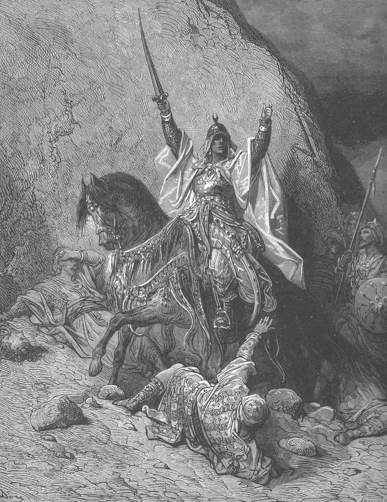
승리자 살라딘(Saladin the Victorious) · 귀스타브 도레의 십자군 판화 연작(19세기). 실제 동시대 초상은 남아 있지 않으며, 우리가 떠올리는 살라딘의 얼굴은 모두 후대의 상상이다. [Wikimedia · Public Domain]
그가 살아간 12세기 중반의 근동은 세 겹으로 갈라져 있었다. 첫째, 바그다드에는 명목상의 수니파 종주인 아바스 칼리프가 있었으나 실권은 셀주크 튀르크의 군벌들에게 넘어가 있었다. 둘째, 카이로에는 그와 대립하는 시아파 파티마 칼리프가 따로 한 세계를 이루고 있었다. 셋째, 지중해 동안에는 1차 십자군(1099)이 남긴 네 개의 십자군 국가, 곧 예루살렘 왕국·트리폴리 백국·안티오키아 공국·에데사 백국이 자리 잡고 있었다. 무슬림 세계는 종파와 군벌로 찢겨 있었고, 바로 그 분열이 십자군이 해안에 뿌리내린 가장 큰 이유였다. 살라딘의 평생 과업은 이 찢어진 직물을 다시 한 폭으로 짜는 일이 된다.
쿠르드라는 출신은 그의 생애 내내 묘한 그림자를 드리웠다. 12세기 근동의 군사·정치 무대는 셀주크 이래 튀르크인이 압도적으로 장악하고 있었다. 아랍인은 종교적 권위를, 페르시아인은 행정과 문예의 전통을 쥐었으나, 쿠르드인은 대개 산악의 용병이거나 변경의 보조 병력으로 취급되었다. 그런 환경에서 한 쿠르드 가문이 이집트와 시리아를 아우르는 술탄국을 세웠다는 것은, 당대의 신분 질서를 거스르는 이례적인 도약이었다. 후대의 일부 사가들이 살라딘의 정통성을 깎아내리려 할 때 가장 먼저 들춘 것도 바로 이 '비(非)튀르크·비아랍' 혈통이었다. 그는 평생 출신의 약점을 경건과 정의, 그리고 지하드의 명분으로 메워야 했다.
아버지 아이유브와 작은아버지 시르쿠 형제의 대조도 흥미롭다. 아이유브는 신중하고 외교적인 행정가였고, 시르쿠는 저돌적이고 거친 무장이었다. 어린 살라딘은 두 삼촌과 아버지 사이에서, 칼의 세계와 펜의 세계를 동시에 곁눈질하며 자랐다. 훗날 그가 보여 줄 면모 — 전장에서는 끈질긴 지휘관이면서 협상 자리에서는 인내심 깊은 외교가였던 그 이중성 — 의 뿌리가 이 가문 안에 이미 갖추어져 있었던 셈이다. 발벡과 다마스쿠스에서 보낸 소년기에 그는 아랍어 고전과 함께 군영의 실무를 익혔고, 이는 후일 그가 학자와 병사 양쪽의 언어를 모두 구사하는 통치자가 되는 밑거름이 되었다.
곁가지 1 — 책을 사랑한 소년의 고백
바하 알딘은 살라딘이 훗날 자신의 젊은 시절을 회상하며 군인의 길은 처음부터 원한 것이 아니었다고 말했다고 전한다. 그는 신학과 학문에 마음이 더 기울어 있었고, 작은아버지 시르쿠가 그를 이집트 원정에 거의 떠밀다시피 데려갔다고 한다. 거대한 정복자가 자신의 출발을 '운명에 떠밀린 것'으로 회고했다는 이 기록은, 그가 권력을 천성으로 탐한 인물이 아니라 상황에 응답하며 커진 인물임을 보여 준다. 다만 이런 겸양의 회고는 군주의 미덕을 강조하려는 전기 특유의 윤색일 수 있어, 사료에 따라서는 그 진정성을 조심스럽게 본다.
[Source] 바하 알딘 이븐 샤다드, 『술탄의 행적에 관한 진귀한 기록(al-Nawādir al-Sulṭāniyya)』; A.-M. Eddé, *Saladin*(2008), 1–2장.
곁가지 2 — 두 정복자를 낳은 한 도시
티크리트는 20세기에 또 한 명의 '티크리트의 아들'을 세상에 내놓았다. 1937년, 살라딘 출생으로부터 정확히 팔백 년 뒤에 태어난 사담 후세인이다. 사담은 평생 이 우연을 정치적으로 활용해, 자신을 살라딘의 후예이자 재현으로 선전했다. 그러나 한 가지는 분명히 짚어야 한다. 살라딘은 쿠르드족이었고, 사담은 바로 그 쿠르드족을 가장 가혹하게 탄압한 통치자였다. 같은 도시, 정반대의 유산이다. 이 아이러니는 마지막 장에서 다시 다룬다.
[Source] S. Lane-Poole, *Saladin and the Fall of the Kingdom of Jerusalem*(1898); 현대 이라크 정치사 일반.
한눈에 보는 살라딘
본명유수프 이븐 아이유브 (Yūsuf ibn Ayyūb)
칭호살라흐 알딘 = '신앙의 의로움'
민족쿠르드족 (라와디야 분파, 드빈 출신)
출생지티크리트 (오늘날 이라크 살라딘 주)
종파수니파 (샤피이 법학파)
최종 칭호이집트·시리아의 술탄
유럽
제2차 십자군(1147–1149)이 다마스쿠스 공략에 실패하며 막을 내린 직후의 세대. 십자군 국가들은 해안에 굳어졌으나 내륙으로는 더 나아가지 못한 채 무슬림의 재결집을 두려워하기 시작했다.
동아시아
중국에서는 남송과 여진의 금나라가 회수를 경계로 대치했다. 한반도 고려는 인종 시대, 1135년 묘청의 서경 천도 운동이 김부식에게 진압된 직후였다. 일본은 헤이안 말기, 무사 가문이 조정 위로 떠오르던 보겐의 난 전야였다.
Tabula I · 나일강을 향하여
이집트 장악 1164–1171 — 다마스쿠스에서 카이로까지
셀주크·장기 세력권 시리아 거점 이집트(파티마조) 장악 원정 경로(3회) 공성·전투
세 차례에 걸친 이집트 원정. 살라딘은 부관으로 따라갔다가 와지르로 남았고, 그 나일강 삼각주가 훗날 그의 모든 전쟁을 떠받칠 곡창이자 금고가 된다.
II
AD 1164–1169 · 시리아에서 이집트로
나일강으로 — 청년 부관의 세 차례 원정
강의 듣기
작은아버지가 그를 전쟁터로 거의 끌고 갔다. 가기 싫어 발을 끌던 청년은, 세 번의 원정이 끝났을 때 이집트의 실권자가 되어 있었다.
살라딘이 모셨던 주군 누르 알딘 마흐무드 장기는 당대 이슬람 세계의 가장 큰 인물이었다. 알레포와 다마스쿠스를 손에 넣어 시리아를 통일한 그는, 십자군을 몰아내기 위해서는 무슬림이 먼저 하나가 되어야 한다는 신념을 평생의 정책으로 삼았다. 그의 눈에 카이로의 시아파 파티마 왕조는 두 가지 의미였다. 종파의 이단이자, 동시에 거대한 부의 보고였다. 마침 파티마 조정은 두 명의 와지르가 권력을 다투며 내부에서 무너지고 있었다. 쫓겨난 와지르 샤와르(Shāwar)가 다마스쿠스로 달려와 도움을 청하자, 누르 알딘은 절호의 기회를 보았다.
원정의 칼자루는 살라딘의 작은아버지 아사드 알딘 시르쿠에게 맡겨졌다. 시르쿠는 키가 작고 다리가 짧으며 한쪽 눈에 백태가 낀, 결코 미남이라 할 수 없는 사내였으나 전장에서는 사자였다. 별명부터가 '산속의 사자(Asad al-Dīn)'였다. 그가 1164년 첫 원정에 조카 살라딘을 부관으로 데려갔다. 바하 알딘에 따르면 청년 살라딘은 이 명을 반기지 않았다. 다마스쿠스의 학문과 안락을 떠나기 싫었던 것이다. 그러나 시르쿠는 막무가내였다. 훗날 살라딘은 이렇게 회고했다.
나는 마치 도살장으로 끌려가는 사람처럼 이집트로 갔다. 그러나 신께서 나를 위해 예비하신 것이 거기에 있었다.
살라딘의 회고, 바하 알딘 『진귀한 기록』 전재
전쟁은 한 번에 끝나지 않았다. 1164년, 1167년, 1169년 세 차례에 걸쳐 시르쿠와 살라딘은 이집트로 들어갔다. 상황은 어지러웠다. 파티마의 와지르 샤와르는 누르 알딘의 군대를 끌어들였다가, 그들이 너무 강해지자 이번에는 예루살렘 왕국의 십자군을 끌어들여 시리아군을 견제했다. 무슬림과 기독교 세력이 나일강을 두고 동맹과 배신을 거듭하는 진흙탕 외교가 펼쳐졌다. 1167년 살라딘은 알렉산드리아에서 십자군과 파티마 연합군에게 포위당한 채 농성을 치렀다. 식량과 물이 떨어지는 가운데 그는 침착하게 도시를 지켜냈고, 이 공성전은 무명의 청년 부관이 처음으로 자신의 지휘 능력을 증명한 무대가 되었다.
알렉산드리아 농성에는 그의 성품을 엿보게 하는 일화가 따라붙는다. 포위가 풀리고 협상으로 도시를 넘겨줄 때, 그는 자신을 괴롭히던 십자군 왕 아모리와 의외로 정중한 관계를 맺었다고 전한다. 양측은 포로를 교환하고 예의를 갖춰 헤어졌으며, 일부 십자군 기사들은 이 젊은 무슬림 지휘관의 절제된 태도에 깊은 인상을 받았다고 한다. 적과 싸우면서도 적의 존경을 얻는, 훗날 리처드와의 관계에서 절정에 이를 그 능력의 첫 씨앗이 이미 이 나일강 삼각주에서 움트고 있었던 것이다.
세 차례 원정의 본질은 단순한 정복이 아니라 거대한 도박이었다. 시리아 본대에서 멀리 떨어진 이집트는 보급선이 길고, 십자군과 파티마군이 언제든 협공할 수 있는 위험한 땅이었다. 누르 알딘이 거듭 군대를 보낸 것은 그만큼 이집트의 부가 압도적이었기 때문이다. 나일강 삼각주의 곡창과 홍해 무역의 관세는, 손에 넣기만 하면 시리아의 빈약한 재정을 단숨에 몇 배로 불려 줄 보물단지였다. 실제로 이집트를 장악한 뒤 살라딘의 군사력은 비약적으로 커졌고, 훗날 하틴에 동원된 삼만 대군의 군량과 봉급은 바로 이 나일강에서 나왔다. 청년 부관의 마지못한 종군이, 결국 그의 모든 전쟁을 떠받칠 토대를 마련해 준 셈이다.
이집트 원정기는 또한 살라딘이 십자군이라는 적의 실체를 처음으로 가까이에서 관찰한 시기이기도 했다. 그는 예루살렘 왕 아모리가 이끄는 십자군이 얼마나 잘 조직된 기병 전력을 갖추었는지, 그리고 그 중무장 기사단이 정면 충돌에서 얼마나 위협적인지를 직접 목격했다. 동시에 그들의 약점 — 본국에서 멀리 떨어진 보급의 한계, 더위에 취약한 갑옷, 그리고 한번 야전군을 잃으면 회복하기 어려운 인적 자원 — 도 눈여겨보았다. 이 관찰은 이십 년 뒤 하틴에서 그대로 실전 전략이 된다. 적을 알기 위해 적과 함께 싸우고 적과 맞서 싸운 이 견습기가, 그를 십자군 전쟁의 가장 깊은 이해자로 키운 것이다.
이집트 장악이 가지는 전략적 의미는 지도를 펼쳐 보면 더욱 분명해진다. 당시 십자군 국가들은 지중해 동안에 남북으로 길게 늘어서 있었고, 그 남쪽 끝은 이집트와 맞닿아 있었다. 만약 무슬림이 이집트와 시리아를 동시에 손에 넣으면 십자군 국가는 남북 양쪽에서 협공당하는 형국에 놓이고, 반대로 십자군이 이집트를 차지하면 무슬림 세계는 둘로 동강 난다. 그래서 이집트는 십자군 전쟁의 가장 중요한 전략적 길목이었다. 누르 알딘과 아모리 왕이 그토록 집요하게 나일강으로 군대를 보낸 까닭이 여기에 있었다. 살라딘이 이집트를 무슬림 진영으로 확정 지은 1171년의 사건은, 사실상 하틴의 승리를 십육 년 앞당겨 예약한 것이나 다름없었다.
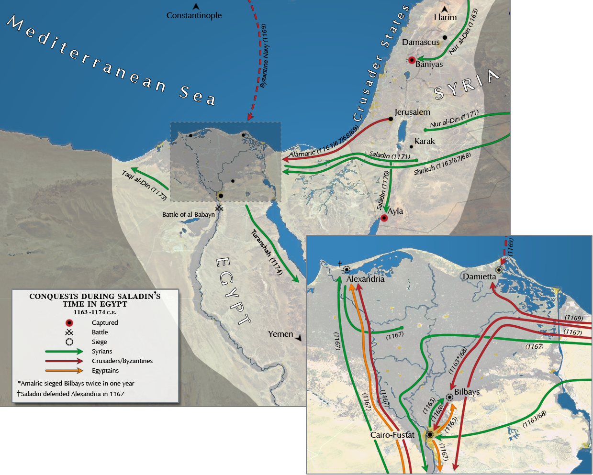
살라딘의 이집트 장악(1169–1171) · 파티마 왕조의 와지르를 거쳐 권력을 잡기까지의 경로를 보여 주는 지도. [Wikimedia · CC BY-SA]
1169년 세 번째 원정에서 모든 것이 결판났다. 시르쿠가 십자군을 몰아내고 카이로에 입성해 마침내 파티마 칼리프의 와지르 자리에 올랐다. 명목상 시아파 칼리프를 섬기는 자리였으나, 실권은 온전히 그의 것이었다. 그러나 영광은 두 달 만에 끝났다. 시르쿠가 갑작스러운 발작으로 세상을 떠난 것이다. 과식 뒤의 졸중으로 전한다. 누가 그 막강한 자리를 이을 것인가. 카이로의 파티마 칼리프 알아디드는 머리를 굴렸다. 시리아 장수들 가운데 가장 젊고, 가장 만만해 보이는 자를 앉히면 자신이 다시 실권을 쥘 수 있으리라. 그가 고른 인물이 서른두 살의 살라딘이었다. 역사상 가장 큰 오판 중 하나였다.
곁가지 1 — 만만해 보였던 자
이븐 알아시르를 비롯한 사료들은 파티마 조정과 시리아 장수들 모두가 살라딘을 '다루기 쉬운 후보'로 보아 그를 와지르로 밀었다고 전한다. 그가 젊고 가문이 외부 출신이라 독자 세력이 없을 것이라 본 것이다. 그러나 권좌에 앉은 살라딘은 곧장 카이로의 군과 행정을 장악하고, 자기 일족과 쿠르드·튀르크 병사들을 요직에 심었다. '약한 후보'를 세우려던 모두의 계산이 거꾸로 그에게 권력을 몰아 준 셈이다. 약점으로 여겨진 것이 도리어 자유로운 손을 쥐여 준 역설이었다.
[Source] 이븐 알아시르, 『완전한 역사(al-Kāmil fī al-Tārīkh)』; H. Möhring, *Saladin: The Sultan and His Times*(2008).
곁가지 2 — 사자의 죽음, 과식의 전설
시르쿠의 죽음을 두고 사료들은 '지나친 식욕' 끝의 졸도를 거듭 언급한다. 그가 기름진 음식을 즐겼고 비만했다는 묘사와 맞물려, 이 일화는 중세 연대기 특유의 도덕적 교훈 — 절제 없는 욕망의 끝 — 으로 윤색되었을 가능성이 크다. 진단의 정확성은 알 수 없으나, 조카 살라딘이 평생 검소한 식탁과 절제를 고수한 것이 작은아버지의 최후에서 받은 인상과 무관하지 않으리라는 해석도 있다.
[Source] 바하 알딘 『진귀한 기록』; 이마드 알딘 알이스파하니의 동시대 기록.
예루살렘 왕국
왕 아모리 1세(Amalric)는 이집트를 차지하려고 거듭 나일강에 군대를 보냈다. 만약 십자군이 이집트의 부와 곡창을 손에 넣었다면 근동의 균형은 영원히 기울었을 것이다. 살라딘의 이집트 장악은 바로 그 가능성을 봉쇄한 사건이었다.
비잔티움
콘스탄티노폴리스의 마누엘 1세 콤네노스는 이집트 원정에 함대를 보내 십자군과 공조했으나 별 성과 없이 물러났다. 동로마의 마지막 전성기가 저물어 가고 있었다.
III
AD 1169–1171 · 카이로
파티마의 종언, 아이유브의 새벽
강의 듣기
금요 예배의 설교에서 이름 하나를 바꿔 부르는 것으로, 이백 년을 이어 온 한 왕조가 조용히 끝났다.
와지르가 된 살라딘 앞에는 미묘한 균형의 줄타기가 놓여 있었다. 그는 명목상 시아파 파티마 칼리프의 신하였으나, 실제로는 수니파 누르 알딘이 보낸 사람이었다. 두 주군 사이에서 그는 신중하게 발을 옮겼다. 먼저 파티마 칼리프궁을 호위하던 흑인 보병대와 누비아 친위대의 반란을 진압해 카이로의 무력을 자기 손에 넣었다. 이어 군대의 봉급과 식량을 직접 관장하며 충성의 고리를 자신에게로 옮겼다. 동시에 그는 검소하게 처신했다. 와지르가 되자 술과 향락을 끊고, 경건한 학자와 법관들을 가까이 두었다. 카이로의 민심이 서서히 그에게로 기울었다.
결정적 순간은 1171년 9월에 왔다. 마지막 파티마 칼리프 알아디드가 병으로 죽어 가고 있었다. 살라딘은 그가 숨을 거두기 직전, 금요 예배의 후트바(설교)에서 칼리프의 이름을 바꾸라 명했다. 카이로의 모스크에서 이백 년 동안 불려 온 파티마 칼리프의 이름 대신, 바그다드의 수니파 아바스 칼리프의 이름이 울려 퍼졌다. 한 줄의 기도문이 바뀐 것뿐이었으나, 그것은 909년부터 이어진 파티마 왕조의 종언이자, 근동의 시아파 칼리프국이 사라지고 수니파의 세계로 통합되는 거대한 전환이었다. 며칠 뒤 알아디드는 자신의 왕조가 끝났다는 사실조차 알지 못한 채 눈을 감았다고 전한다.
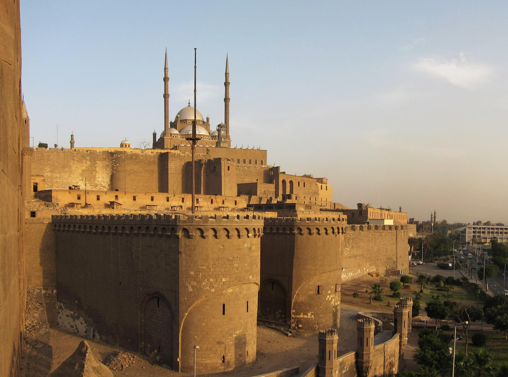
카이로 성채(Citadel of Saladin) · 1176년 착공. 살라딘이 무카탐 언덕에 세운 군사 요새로, 이후 칠백 년간 이집트 통치의 심장부가 되었다. [Wikimedia · Public Domain]
이제 이집트의 주인이 된 살라딘은 새 질서를 세우기 시작했다. 그는 자기 아버지의 이름을 따 아이유브 왕조(Ayyūbid dynasty)를 열었다. 수니파 신학을 진흥하기 위해 카이로 곳곳에 마드라사(법학원)를 세웠고, 시아파 색채가 짙던 도시를 수니파의 중심으로 재편했다. 무카탐 언덕 위에는 거대한 성채(시타델)를 쌓아 올렸는데, 이 요새는 오늘날까지 카이로의 스카이라인을 지키며 그의 이름을 붙들고 있다. 다만 그가 형식상으로는 여전히 누르 알딘의 부하였다는 사실은 곧 두 사람 사이에 팽팽한 긴장을 낳게 된다.
여기서 그의 성격을 보여 주는 한 장면이 있다. 파티마 칼리프 일가에 대한 처분이다. 정복자가 전 왕조의 혈통을 몰살하는 것이 당대의 흔한 관행이었으나, 살라딘은 그렇게 하지 않았다. 그는 파티마 가문 사람들을 궁에 연금하되 목숨을 보전하고, 남녀를 분리해 후사를 잇지 못하게 하는 선에서 멈췄다. 학살 대신 격리를 택한 이 절제는, 십육 년 뒤 예루살렘에서 다시 한번, 훨씬 거대한 규모로 되풀이된다.
파티마 왕조의 멸망은 단순한 정권 교체가 아니라 이슬람 사상사의 한 분수령이었다. 909년 북아프리카에서 일어나 카이로를 세운 파티마조는 시아파 이스마일파의 거대한 실험이었다. 그들은 알아즈하르 모스크와 그 부속 학원을 세워 시아 신학의 중심지로 삼았고, 한때 지중해 동부의 무역과 학문을 호령했다. 그 이백육십여 년의 역사가 살라딘의 한 번의 후트바 교체로 막을 내린 것이다. 흥미롭게도 살라딘이 수니파의 거점으로 재편한 그 알아즈하르는, 수백 년이 지난 오늘날 수니파 이슬람 학문의 최고 권위로 남아 있다. 한 정복자의 종파 정책이 천 년의 사상 지형을 바꾸어 놓은 셈이다.
흥미로운 것은 이 거대한 종파 전환이 거의 유혈 없이 이루어졌다는 점이다. 카이로의 시아파 주민들이 하루아침에 수니파로 개종한 것은 물론 아니었다. 살라딘은 강제 개종이라는 손쉬운 폭력 대신, 수니파 학원을 세우고 수니 법관을 임명하며 시간을 두고 도시의 종교 지형을 천천히 바꾸어 나갔다. 시아파 의례를 당장 금지하기보다 공적 권위에서 배제하는 방식이었다. 이 점진적 접근은 격렬한 반발을 피하면서도 확실한 전환을 이끌어 냈다. 급격한 변화를 강요하지 않고 제도와 시간으로 흐름을 돌려놓는 이 방식은, 그가 시리아 통합에서 보여 줄 '부드러운 정복'의 예고편이기도 했다.
새 술탄으로서 살라딘이 가장 공들인 것은 정통성의 확보였다. 그는 바그다드의 아바스 칼리프에게 사절과 공물을 보내, 자신의 통치를 공식적으로 인준받으려 했다. 칼리프가 보낸 임명장과 명예의 예복(칼리프가 하사하는 의복은 곧 통치권의 상징이었다)을 받음으로써, 그는 '벼락출세한 쿠르드 무장'이 아니라 '정통 수니 칼리프가 임명한 술탄'으로 격상되었다. 동시에 그는 지하드, 곧 십자군에 맞선 성전(聖戰)의 기치를 자신의 통치 이념으로 내걸었다. 종교적 명분과 칼리프의 권위, 그리고 이집트의 부 — 이 세 기둥 위에서 비로소 아이유브 왕조가 단단히 섰다.
곁가지 1 — 사라진 보물 창고
파티마 칼리프궁에는 이백 년간 축적된 전설적인 보물 창고가 있었다. 사료들은 거대한 도서관, 진귀한 보석, 페르시아·중국에서 온 도자기, 그리고 에메랄드로 깎은 잉크병까지 전한다. 살라딘은 이 보물의 상당량을 풀어 군대의 봉급과 새 정권의 운영 자금으로 썼다. 파티마의 방대한 장서가 이 과정에서 흩어졌고, 일부는 헐값에 팔려 나갔다고 한다. 후세 학자들은 이슬람 도서 문화의 큰 손실로 이를 안타까워한다. 다만 도서관 해체의 책임을 어디까지 살라딘에게 물을 수 있는지는 사료마다 평가가 갈린다.
[Source] 알마크리지(al-Maqrīzī)의 후대 기록; A.-M. Eddé, *Saladin*, 이집트 행정 장.
곁가지 2 — 두 주군 사이의 줄타기
이집트를 장악한 살라딘과 시리아의 누르 알딘 사이는 갈수록 껄끄러워졌다. 누르 알딘은 살라딘이 막대한 이집트의 부를 자기에게 충분히 바치지 않는다고 의심했고, 한때 직접 군대를 이끌고 이집트를 치려 했다는 이야기도 전한다. 살라딘은 표면적으로 깍듯이 복종하면서도 실질적 독립을 유지하는 아슬아슬한 줄타기를 이어 갔다. 이 긴장은 1174년 누르 알딘이 갑자기 죽으면서 비로소 풀리게 된다. 운명은 또 한 번 그에게 길을 비켜 주었다.
[Source] 이븐 알아시르 『완전한 역사』; M. C. Lyons & D. E. P. Jackson, *Saladin: The Politics of the Holy War*(1982).
1171년의 전환
끝난 왕조파티마 칼리프국 (909–1171, 시아파 이스마일파)
방식금요 후트바의 칼리프 이름 교체
새 종주바그다드 아바스 칼리프 (수니파)
새 왕조아이유브 왕조 (1171–1260년대)
상징물카이로 성채 (1176 착공)
서유럽
잉글랜드에서는 1170년 캔터베리 대주교 토머스 베켓이 헨리 2세의 기사들에게 살해되는 사건이 일어나 기독교 세계를 뒤흔들었다. 그 헨리 2세의 아들이 훗날 살라딘의 맞수가 될 리처드다.
이베리아
북아프리카와 안달루스에서는 알모하드 왕조가 절정에 이르러, 또 다른 전선에서 기독교 레콘키스타와 맞서고 있었다. 이슬람 세계는 동쪽과 서쪽 양끝에서 동시에 십자군 시대를 살아가고 있었다.
IV
AD 1174–1186 · 시리아·자지라
시리아 통합 — 십이 년의 인내
강의 듣기
진짜 적은 십자군이라 외치면서도, 그는 십이 년을 동료 무슬림과 싸웠다. 그 모순을 견디는 것이 그의 가장 어려운 전쟁이었다.
1174년, 살라딘의 옛 주군 누르 알딘이 다마스쿠스에서 갑작스레 세상을 떠났다. 후계자는 열한 살의 어린 아들 알살리흐 이스마일이었고, 그를 둘러싼 장기조(Zangid) 신하들은 곧장 파벌로 갈라져 다투기 시작했다. 같은 해 예루살렘 왕국의 아모리 왕도 죽고, 그 자리는 나병을 앓는 소년 왕 보두앵 4세가 이었다. 근동의 세 강자가 한 해에 사라지거나 약해진 것이다. 살라딘은 이 권력 공백을 기회로 보았다. 그는 어린 주군을 보호한다는 명분으로 다마스쿠스에 입성해, 사실상 시리아의 새 주인을 자처했다.
그러나 길은 험했다. 누르 알딘의 옛 신하들, 특히 알레포와 모술을 쥔 장기조 세력은 살라딘을 '주군의 자리를 가로챈 벼락출세한 부하'로 보고 격렬히 저항했다. 그들은 심지어 산속의 암살 교단 아사신(니자리 이스마일파)을 끌어들여 살라딘을 노렸다. 살라딘은 두 차례 암살 위기를 넘겼다. 한 번은 칼이 두건 속에 숨겨 둔 사슬 두건에 막혔고, 또 한 번은 잠자던 그의 곁에 독을 바른 단검과 빵이 놓여 있었다고 전한다. 그는 결국 아사신의 본거지 마시아프 요새를 포위했으나, 어떤 협상 끝에 포위를 풀고 물러났다. 이후 양측은 서로를 건드리지 않는 묵계에 이르렀다.
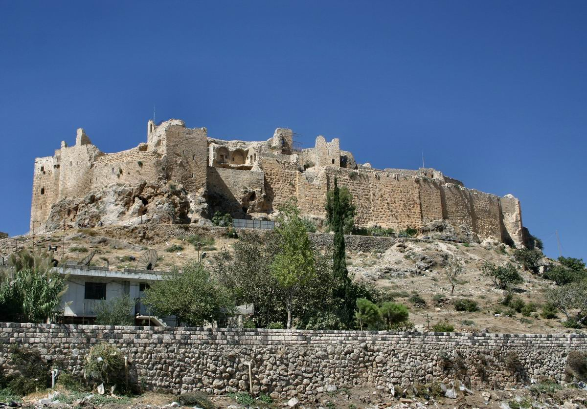
마시아프 요새 · 시리아 누사이리야 산맥의 아사신 교단 본거지. 살라딘은 이곳을 포위했다가 풀고 물러났으며, 이후 양측은 불가침의 묵계에 들어갔다. [Wikimedia · Public Domain]
시리아 통합에는 꼬박 십이 년이 걸렸다. 살라딘은 다마스쿠스(1174)를 시작으로 홈스, 하마, 발벡을 차례로 거두고, 가장 완강했던 알레포를 1183년에야 손에 넣었다. 마지막으로 1186년 모술이 그의 종주권을 인정하면서, 이집트에서 시리아·자지라(상부 메소포타미아)·헤자즈에 이르는 거대한 권역이 한 사람의 깃발 아래 묶였다. 이 십이 년 동안 그가 십자군과 벌인 전투보다 동료 무슬림과 벌인 전투가 더 많았다는 사실은, 당대에도 날카로운 비판을 불렀다.
그는 지하드를 명분으로 내세웠으나, 그의 칼은 더 자주 같은 신앙의 형제들을 향했다.
이븐 알아시르 『완전한 역사』의 비판적 논평
이 비판은 정당한 면이 있다. 모술의 역사가 이븐 알아시르는 장기 가문에 충성했기에 살라딘에게 시종 냉정했다. 그러나 살라딘의 논리도 분명했다. 십자군에 맞서는 지하드를 성공시키려면, 먼저 갈가리 찢긴 무슬림 세계를 하나의 군사·재정 체제로 통합해야 한다는 것이다. 분열된 채로는 백 번을 싸워도 해안의 십자군을 바다로 밀어낼 수 없었다. 그는 이 통합을 위해 무력만 쓰지 않았다. 결혼 동맹, 관대한 사면, 봉토의 재분배, 그리고 바그다드 칼리프의 권위를 빌린 명분 만들기를 능란하게 결합했다. 큰일을 이루려면 눈앞의 비난을 견디며 토대를 다지는 긴 시간이 필요하다는 것 — 그것이 이 십이 년이 남긴 정치적 교훈이다.
이 통합 과정에서 살라딘이 보여 준 정치 수완은 무력 못지않게 정교했다. 그는 정복한 도시의 옛 지배 가문을 무조건 제거하지 않았다. 오히려 그들과 혼인 동맹을 맺거나 봉토를 재배분해 자기 체제 안으로 끌어들였다. 항복한 적장에게는 관대한 조건을 제시해 다음 도시의 저항 의지를 꺾었고, 끝까지 맞선 자에게는 단호했다. 또한 그는 점령지마다 모스크와 마드라사, 수피 수도장을 세워 종교계의 지지를 다졌다. 칼로 빼앗은 땅을 신앙과 학문, 그리고 자선으로 다스린 것이다. 이런 '부드러운 통합'의 기술 덕분에, 십이 년에 걸쳐 묶인 광대한 권역이 하틴의 순간에 분열 없이 한 깃발 아래 움직일 수 있었다.
그러나 이 시기 살라딘의 건강은 여러 차례 위태로웠다. 1185년경 그는 알레포 공략을 앞두고 중병을 앓아 한때 죽음의 문턱까지 갔다고 전한다. 측근들이 후계를 걱정할 정도였다. 그가 병석에서 일어나 끝내 알레포와 모술을 굴복시킨 것은, 통합의 대업이 그의 개인적 의지와 끈기에 얼마나 깊이 의존하고 있었는가를 보여 준다. 동시에 이는 그의 제국이 제도가 아니라 한 사람의 카리스마 위에 세워진 취약한 구조였음을 예고하는 것이기도 했다. 실제로 그가 죽자마자 그 통합이 흔들린 것은 우연이 아니었다.
이 십이 년의 통합기는 살라딘이라는 인물의 성격을 가장 잘 드러내는 시기이기도 하다. 그는 결코 서두르지 않았다. 한 도시를 얻기 위해 몇 해를 기다렸고, 항복하지 않는 적을 무리하게 짓밟기보다 시간과 외교로 굴복시켰다. 알레포 공략에서 그는 무력 공성과 협상을 번갈아 쓰며 몇 차례나 포위를 풀었다가 다시 조였다. 동시대인들에게 우유부단해 보이기도 한 이 끈기가, 실은 무슬림 세계의 내부 분열을 최소한의 유혈로 봉합하려는 신중함이었다. 큰 적을 앞에 두고 같은 편을 너무 가혹하게 다루면 원한이 남아 결정적 순간에 등을 돌린다는 것을, 그는 알고 있었다. 그래서 그의 통합은 정복이라기보다 봉합에 가까웠고, 바로 그 부드러움이 하틴에서 거대한 연합군을 한 깃발 아래 묶어 낸 비결이었다.
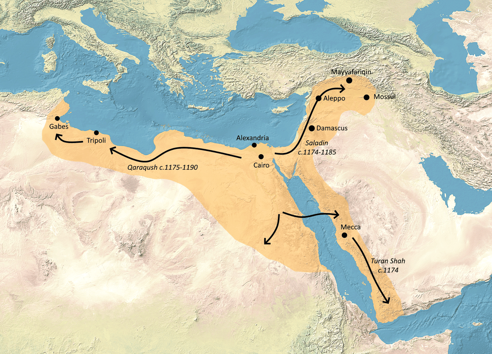
아이유브 술탄국의 확장(1174–1193) · 이집트에서 시작해 시리아·자지라·헤자즈·예멘까지 뻗어 나간 살라딘의 권역. [Wikimedia · CC BY-SA]
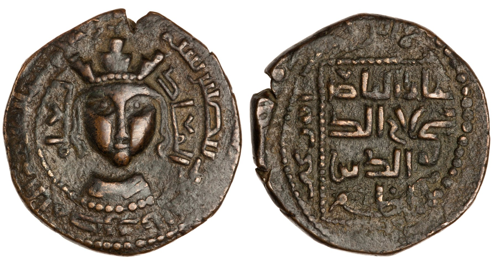
살라딘의 주화 · 니시빈 조폐소, 헤지라 578년(1182–83). 사산조 양식의 왕관을 쓴 형상이 새겨져, 그가 옛 동방 군주의 권위를 계승하려 했음을 보여 준다. [Wikimedia · Public Domain]
통합의 와중에도 십자군과의 전선은 끊이지 않았다. 1177년에는 몽기사르(Montgisard)에서 나병왕 보두앵 4세에게 뼈아픈 참패를 당했고, 1179년에는 거꾸로 요르단강 상류의 십자군 신축 요새 야곱의 여울(Jacob's Ford)을 함락시켜 설욕했다. 성벽이 채 마르기도 전에 무너진 이 요새의 폐허는 오늘날에도 들판에 남아, 그 시대의 긴장을 증언한다.
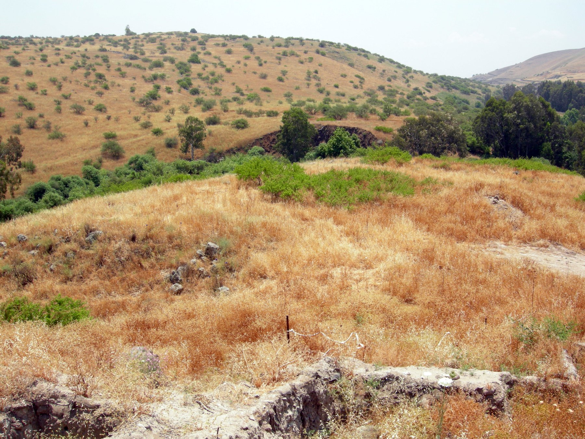
야곱의 여울(Jacob's Ford) 전쟁터 · 요르단강 상류. 1179년 살라딘이 십자군의 신축 요새를 함락시킨 자리로, 성벽이 완공되기 전에 무너졌다. [Wikimedia · Public Domain]
곁가지 1 — 베개 위의 단검
아사신의 두 번째 암살 시도에 관한 가장 극적인 전승은 이렇다. 마시아프를 포위한 살라딘이 어느 날 아침 눈을 떴을 때, 머리맡에 따뜻한 빵과 독을 바른 단검, 그리고 "그대는 우리 손안에 있다"는 쪽지가 놓여 있었다는 것이다. 교단의 우두머리 '산상 노인' 라시드 알딘 시난이 그날 밤 친히 다녀갔다는 암시였다. 이 일화는 후대에 많이 윤색되었으므로 사실 여부는 단정하기 어렵지만, 살라딘이 끝내 마시아프 포위를 풀고 아사신과 화해한 정황과는 잘 들어맞는다.
[Source] 후대 아사신 전승; B. Lewis, *The Assassins*(1967); 동시대 시리아 연대기.
곁가지 2 — 나병왕이라는 맞수
1177년 몽기사르 전투에서 살라딘에게 굴욕적 패배를 안긴 인물은 열여섯 살의 나병왕 보두앵 4세였다. 손가락 감각을 잃어 가는 병든 몸으로 직접 군을 이끈 이 소년 왕은, 살라딘조차 인정한 용맹한 적수였다. 살라딘 군은 방심한 채 진군하다 기습당해 큰 손실을 입고 간신히 이집트로 후퇴했다. 살라딘이 그토록 신중하고 끈질긴 지휘관이 된 데에는, 젊은 날 이 패배에서 얻은 교훈이 깔려 있다는 해석이 있다.
[Source] 윌리엄 오브 티레(William of Tyre)의 연대기; B. Hamilton, *The Leper King and His Heirs*(2000).
예루살렘 왕국
나병왕 보두앵 4세가 병으로 쇠약해지면서 왕국 내부는 후계를 둘러싼 파벌 다툼으로 흔들렸다. 강경파 르노 드 샤티용(Raynald de Châtillon)은 휴전을 깨고 무슬림 대상과 순례단을 약탈해 살라딘의 분노를 거듭 샀다.
중앙아시아
저 멀리 몽골 초원에서는 살라딘이 시리아를 통합하던 무렵, 한 부족장의 아들 테무진 — 훗날의 칭기즈 칸 — 이 부친을 잃고 시련의 유년을 보내고 있었다. 한 세대 뒤 그의 후예들이 바그다드를 불태우게 된다.
Tabula II · 흩어진 것을 한 폭으로
시리아 통합 1174–1186 — 다마스쿠스에서 알레포와 모술까지
첫 거점 다마스쿠스 1174–86 통합 권역 통합 진군로 십자군 전투
알레포 1183, 모술 1186. 한 도시씩 십이 년에 걸쳐 묶어 낸 권역이 곧 하틴의 대군을 떠받칠 토대가 되었다.
V
AD 1187년 7월 4일 · 갈릴리, 하틴의 뿔
하틴의 뿔 — 갈증으로 무너진 왕국
강의 듣기
한여름의 갈릴리, 물 한 모금을 향한 절망이 한 왕국 전체를 살라딘의 손바닥 위에 올려놓았다.
전쟁의 도화선은 한 사람의 만행이었다. 십자군 강경파 르노 드 샤티용은 살라딘과 맺은 휴전을 거듭 어기고 무슬림 대상과 메카 순례단을 약탈했다. 전승에 따르면 그 약탈 대상 가운데 살라딘의 누이가 있었다는 이야기까지 전한다. 진위는 분명치 않으나, 살라딘이 르노의 머리를 직접 베겠다고 맹세했다는 기록은 여러 사료에 공통된다. 1187년, 그는 마침내 휴전의 명분을 거두고 시리아·이집트·자지라의 대군을 갈릴리로 집결시켰다. 십이 년의 통합이 비로소 하나의 거대한 망치가 되어 내려쳤다.
예루살렘 왕국은 총력을 끌어모았다. 왕 기 드 뤼지냥 휘하에 약 이만의 병력, 그중 기사가 천이백 명에 달하는, 왕국 역사상 가장 큰 군대였다. 살라딘은 미끼를 던졌다. 그는 갈릴리 호숫가의 도시 티베리아스를 포위하고, 그 안에 트리폴리 백작 레몽의 아내를 가두었다. 십자군 진영은 갈렸다. 노련한 레몽은 "물이 풍부한 자리에 머물며 적을 기다리자, 티베리아스는 내 아내가 갇혔어도 포기하라"고 충고했다. 그러나 강경파 성전기사단장과 르노가 즉각 진군을 주장했고, 우유부단한 기 왕은 결국 진군을 택했다. 살라딘이 정확히 노린 결정이었다.
7월 3일, 십자군은 물도 그늘도 없는 메마른 고원을 가로질러 티베리아스로 향했다. 무거운 갑옷을 입은 채 한여름 갈릴리의 폭염 속을 행군한 그들은 곧 갈증에 시달렸다. 살라딘의 기병은 사방에서 화살을 퍼부으며 그들을 괴롭혔고, 우물과 샘으로 가는 길목을 모조리 차단했다. 밤이 되자 십자군은 하틴의 뿔(Horns of Hattin)이라 불리는 쌍봉 언덕 부근에 갇힌 채 야영했다. 갈릴리 호수의 푸른 물이 눈앞에 보였으나 닿을 수 없었다. 살라딘은 여기에 마지막 한 수를 더했다. 메마른 들풀에 불을 지르게 한 것이다. 연기가 갈증에 더해 십자군의 폐를 태웠다.
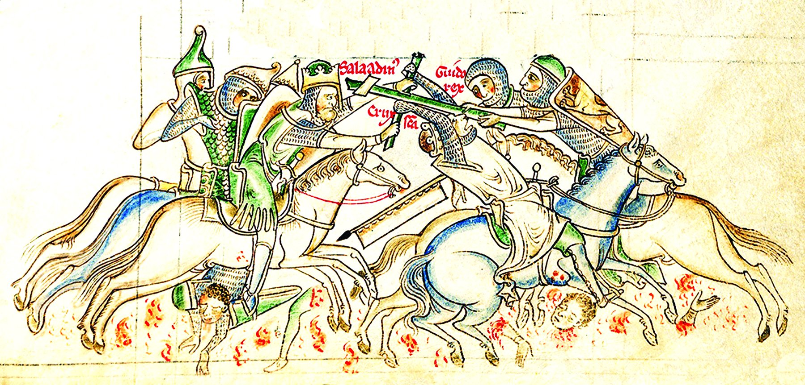
진리의 십자가를 빼앗는 살라딘 · 매튜 패리스(Matthew Paris)의 『대연대기(Chronica Majora)』, 1235–59년. 하틴에서 십자군이 가장 신성하게 여긴 성유물을 잃는 장면이다. [Wikimedia · Public Domain]
7월 4일 아침, 절망한 십자군은 호수를 향해 마지막 돌격을 감행했다. 그러나 갈증과 연기에 탈진한 그들은 살라딘의 그물을 뚫지 못했다. 진영은 무너졌고, 왕국의 군대는 거의 전멸하다시피 했다. 왕 기 드 뤼지냥이 사로잡혔고, 십자군의 가장 신성한 성유물인 참된 십자가(True Cross)가 살라딘의 손에 들어갔다. 한 왕국의 군사력과 종교적 상징이 한나절에 무너진 것이다. 이븐 알아시르조차 이 승리만큼은 인정하지 않을 수 없었다.
그날 이슬람은 패배 위에 다시 승리를 세웠다. 사로잡힌 자가 너무 많아, 한 명의 포로가 신발 한 켤레 값에 팔렸다.
이븐 알아시르 『완전한 역사』, 하틴 전투 기록
전투 뒤 살라딘은 자신의 두 얼굴을 동시에 보여 주었다. 그는 사로잡힌 기 왕을 천막으로 불러 손수 얼음물을 권하며 예우했다. 그러나 그 옆의 르노 드 샤티용에게는 맹세대로 직접 칼을 들어 목을 베었다. 또한 그는 평생 가장 위험한 적으로 여긴 성전기사단과 구호기사단의 포로 수백 명을 처형했다. 광신적 전투 수도회는 결코 회유할 수 없는 적이라 판단한 것이다. 너그러운 군주의 칼에도 분명한 한계선이 있었다. 자비와 단호함을 상황에 따라 가르는 그 감각이, 그를 단순한 호인이 아니라 정치가로 만들었다.
하틴의 군사적 의미는 아무리 강조해도 지나치지 않다. 중세 예루살렘 왕국의 방어력은 소수의 중무장 기사단에 절대적으로 의존했다. 농경 인구가 적은 십자군 국가는 한번 야전군을 잃으면 그것을 재건할 인적 자원이 없었다. 살라딘은 바로 그 약점을 정확히 노렸다. 그는 도시 하나하나를 차례로 공략하는 더딘 방식 대신, 왕국의 야전군 전체를 한 자리로 끌어내 단 하루의 전투로 절멸시키는 길을 택했다. 결과는 그의 계산대로였다. 하틴 이후 예루살렘 왕국에는 성벽을 지킬 병사가 거의 남지 않았고, 그래서 두 달 만에 수십 개의 도시와 요새가 도미노처럼 무너졌다. 한 번의 결전으로 한 왕국의 운명을 결정짓는 — 군사사에서 손꼽히는 '섬멸전'의 모범이었다.
하틴은 또한 심리전과 환경 전술의 교과서이기도 했다. 살라딘은 적의 물리적 힘을 정면으로 부수는 대신, 갈증과 연기, 화살과 포위로 적의 의지를 먼저 무너뜨렸다. 무거운 갑옷과 밀집 대형이라는 십자군의 강점을, 물 없는 고원이라는 지형으로 거꾸로 약점으로 바꾸어 놓은 것이다. 적을 자신이 싸우고 싶은 자리로 유인하고, 자연 조건마저 무기로 삼는 이 방식은, 동서고금의 명장들이 공유한 전쟁의 본질 — 싸우기 전에 이미 이겨 놓고 싸운다 — 을 그대로 구현한 것이었다.
전투의 무대가 된 하틴의 뿔은 갈릴리 호수 서쪽에 솟은 사화산의 쌍봉 언덕이다. 두 개의 봉우리가 짐승의 뿔처럼 솟아 있어 그런 이름이 붙었다. 오늘날 이곳에 서면 멀리 푸른 갈릴리 호수가 한눈에 들어오는데, 바로 그 호수를 눈앞에 두고도 닿지 못해 갈증으로 무너진 십자군의 비극이 더욱 선명하게 다가온다. 물이 보이는데 마실 수 없는 것만큼 사람의 의지를 꺾는 고문은 없다. 살라딘은 인간 심리의 이 약한 고리를 정확히 짚었다. 그는 적의 몸이 아니라 적의 마음을 먼저 무너뜨렸고, 무너진 마음은 가장 용맹한 기사단마저 한낮의 갈증 앞에 무력하게 만들었다.
또 한 가지, 하틴 전투에는 우유부단한 지도자가 어떻게 한 왕국을 파멸로 이끄는가에 관한 뼈아픈 교훈이 담겨 있다. 노련한 트리폴리 백작 레몽은 물이 있는 자리에서 적을 기다리자고 했으나, 우유부단한 기 드 뤼지냥 왕은 강경파의 압박에 못 이겨 진군을 택했다. 만약 기 왕이 레몽의 조언을 따랐다면 역사는 달라졌을지 모른다. 살라딘의 승리는 그의 뛰어난 지휘만큼이나, 적장의 결단력 부재가 빚어낸 결과이기도 했다. 위대한 승리의 뒤에는 종종 상대의 치명적 실수가 숨어 있다는 것 — 그것이 군사사가 거듭 들려주는 교훈이다.
곁가지 1 — 신발 한 켤레 값의 포로
하틴 이후 포로가 시장에 넘쳐, 사람 한 명의 몸값이 신발 한 켤레 값까지 떨어졌다는 일화는 여러 무슬림 사료에 거듭 등장한다. 어떤 기사는 자기 목숨값으로 단 한 짝의 샌들을 받고 팔려 갔다고 한다. 과장이 섞였을 수 있으나, 십자군 포로의 수가 시장을 마비시킬 만큼 압도적이었다는 정황을 생생히 전한다. 한 전투의 승패가 한 사회의 물가까지 흔든 드문 사례다.
[Source] 이븐 알아시르 『완전한 역사』; 이마드 알딘 알이스파하니, 하틴 종군 기록.
곁가지 2 — 손수 벤 한 사람
살라딘이 르노 드 샤티용을 직접 처형한 장면은 그의 자비의 한계를 보여 주는 핵심 일화다. 사료에 따르면, 살라딘은 사로잡힌 기 왕에게 얼음물을 권한 뒤 그 잔이 르노에게 건너가려 하자 손을 저었다. 자신이 베푼 물을 마신 자는 관례상 죽이지 않으므로, 르노에게는 그 잔을 허락하지 않은 것이다. 그러고는 휴전을 어기고 순례단을 학살한 죄를 물어 손수 칼을 들었다. 정확한 동작은 사료마다 다르나, 르노만은 결코 살려 두지 않겠다는 그의 오랜 맹세가 실행된 점은 일치한다.
[Source] 이마드 알딘; 바하 알딘 『진귀한 기록』; 십자군 측 『순례자 여정기(Itinerarium)』.
하틴 전투 1187.7.4
장소갈릴리 하틴의 뿔 (쌍봉 언덕)
십자군약 2만 (기사 약 1,200)
아이유브군약 3만 (기병 주력)
승패 요인갈증·고립·들풀 화공
전리품참된 십자가, 기 드 뤼지냥 왕 생포
여파두 달 만에 왕국 대부분 함락
유럽
하틴과 예루살렘 함락 소식이 전해지자 교황 우르바누스 3세는 충격으로 쓰러져 곧 사망했다고 전한다. 뒤를 이은 그레고리우스 8세가 즉시 새로운 십자군 — 제3차 십자군 — 을 호소했다.
중국
같은 해 남송에서는 효종이 다스리며 주자학(성리학)이 꽃을 피우고 있었다. 주희(주자)가 학문 체계를 완성해 가던 시기로, 동방의 사상사와 서방의 전쟁사가 같은 시간을 흐르고 있었다.
VI
AD 1187년 10월 2일 · 예루살렘
예루살렘 — 피 없이 받은 성도
강의 듣기
팔십팔 년 전 십자군은 학살로 이 도시를 차지했다. 살라딘은 그 도시를, 거의 한 방울의 피도 흘리지 않고 되찾았다.
하틴 이후 예루살렘 왕국은 빈껍데기였다. 군대를 잃은 도시들은 차례로 항복했다. 아크레, 야파, 베이루트, 시돈, 아스칼론이 두 달 만에 살라딘의 손에 들어왔다. 그리고 마침내 그의 군대가 예루살렘 성벽 앞에 섰다. 성안에는 정규군이 거의 없었다. 도시 방어를 떠맡은 이는 우연히 그곳에 있던 기사 발리앙 드 이블랭(Balian of Ibelin)이었다. 그는 수만 명의 피란민과 부녀자를 데리고 절망적인 농성을 시작했다.
살라딘은 처음에는 도시를 무력으로 함락해 1099년의 빚을 갚으려 했다. 그러나 발리앙이 협상 자리에서 마지막 카드를 꺼냈다. 만약 무자비한 학살을 강행한다면, 자신들이 성안의 모든 무슬림 포로를 죽이고 이슬람의 성소 — 바위의 돔과 알아크사 모스크 — 를 스스로 파괴한 뒤 마지막 한 사람까지 싸우다 죽겠다는 것이었다. 양쪽 모두에게 파국이 될 위협이었다. 살라딘은 참모들과 상의한 끝에, 자비가 곧 더 큰 승리임을 택했다. 그는 항복 협상에 응했다.
1187년 10월 2일, 예루살렘이 항복했다. 그날은 공교롭게도 이슬람력으로 예언자 무함마드가 밤에 예루살렘에서 승천했다고 전해지는 이스라와 미라지의 기념일과 가까웠다. 살라딘은 도시에 입성하면서 조건을 내걸었다. 모든 기독교인은 일정한 몸값을 내면 자유롭게 도시를 떠날 수 있게 한 것이다. 남자는 금화 열 닢, 여자는 다섯 닢, 아이는 한두 닢이었다. 그러나 가난해서 몸값을 낼 수 없는 이들이 수천에 달했다.
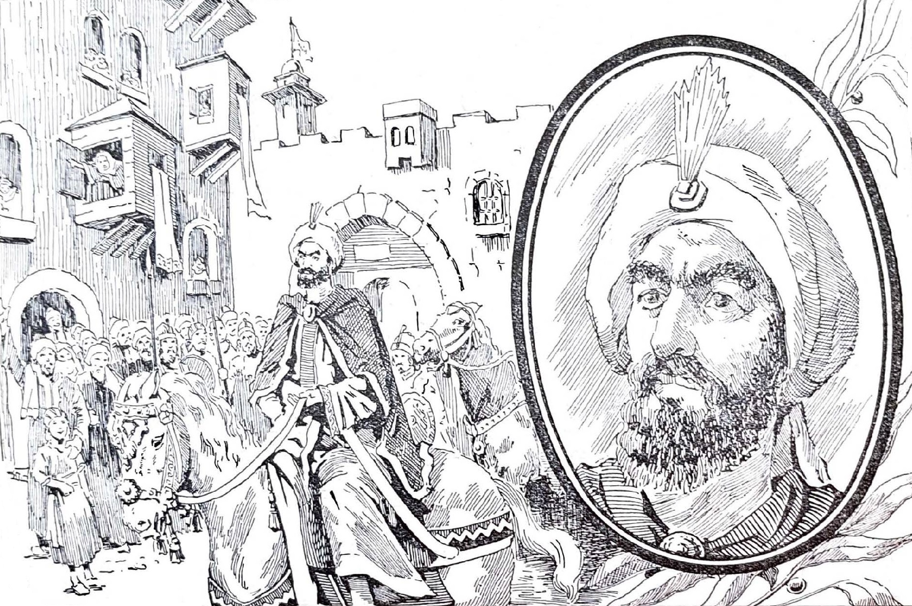
살라딘의 예루살렘 입성(1187) · 후대의 역사 회화. 피의 학살 없이 성도를 받아들인 이 장면은 동·서 양쪽 모두의 기억에 깊이 새겨졌다. [Wikimedia · Public Domain]
여기서 살라딘의 진면목이 드러난다. 그는 몸값을 낼 수 없는 가난한 이들을 노예로 끌고 가는 대신, 자기 사재로 그들의 자유를 사들였다. 그의 동생 알아딜은 천 명의 몸값을 자기 몫으로 풀어 주기를 청했고, 예루살렘 총대주교와 귀족들이 떠나면서도 보석과 황금을 챙기는 것을 본 살라딘의 부하들이 분개했음에도, 그는 약속을 지켜 그들을 보내 주었다. 사료에 따라 수만 명이 이렇게 자유를 얻었다고 전한다. 정복자가 자기 돈을 들여 패자의 자유를 사 준 이 장면은, 당대의 전쟁 관습에서 거의 유례를 찾기 어려운 것이었다.
이 너그러움의 무게는 정확히 팔십팔 년 전의 기억과 대비할 때 드러난다. 1099년 제1차 십자군이 예루살렘을 함락했을 때, 그들은 도시의 무슬림과 유대인을 무차별 학살했다. 라틴 측 종군 기록 『프랑크인의 행적』조차 "솔로몬 성전 구역에서 우리 병사들이 발목까지 핏물에 잠겨 말을 몰았다"고 적었다. 같은 도시, 같은 정복, 그러나 정반대의 선택이었다. 학살은 두 세기에 걸친 증오를 낳았고, 자비는 천 년에 걸친 존경을 낳았다.
살라딘의 자비가 순전히 도덕적 충동만은 아니었다는 점도 짚어야 한다. 그것은 깊은 정치적 계산이기도 했다. 만약 그가 1099년의 십자군처럼 학살을 자행했다면, 이후 모든 십자군 도시는 항복 대신 결사 항전을 택했을 것이다. 항복하면 어차피 죽으리라는 공포가 적의 저항을 극단으로 몰아가기 때문이다. 반대로 '항복하면 목숨과 자유를 보장받는다'는 평판은, 다음 도시들의 항복을 훨씬 쉽게 만들었다. 실제로 하틴 이후 많은 십자군 도시가 큰 저항 없이 성문을 연 데에는, 살라딘의 관대함에 대한 신뢰가 작용했다. 자비가 곧 가장 효율적인 정복 전략이기도 했던 것이다. 도덕과 실용이 한 점에서 만난, 드문 통치의 사례다.
하틴의 승리가 남긴 또 하나의 의미는, 그것이 한 통합 사업의 결산이었다는 점이다. 십이 년에 걸쳐 묶어 낸 이집트·시리아·자지라의 군대가 처음으로 한 전장에 한 깃발 아래 모였고, 그 통합의 힘이 곧장 결정적 전과로 이어졌다. 만약 무슬림 세계가 여전히 분열되어 있었다면 이만의 십자군을 단 하루에 절멸시키는 일은 불가능했을 것이다. 그런 의미에서 하틴은 1187년 7월의 전투인 동시에, 1169년 이집트 장악에서 시작된 긴 준비의 마지막 한 수였다. 오랜 인내가 한순간에 응축되어 폭발한 것이다. 토대를 다지는 데 들인 십수 년이 단 하루의 결정적 승리로 보상받은 이 장면은, 큰일을 도모하는 모든 이에게 시사하는 바가 크다.
그럼에도 이 너그러움을 깎아내려서는 안 된다. 동생 알아딜이 천 명, 총대주교가 일부, 그리고 살라딘 자신이 수천 명의 가난한 이를 사재로 풀어 준 것은 어떤 전략적 계산으로도 다 설명되지 않는다. 사료들은 떠나는 피란민 행렬이 끝없이 이어졌고, 그 가운데 노약자와 과부, 고아가 가득했다고 전한다. 한 정복자가 패자의 가장 약한 이들에게 베푼 이 구체적 자비는, 추상적 관용론을 넘어 한 인간의 품성을 증언한다. 후세 유럽이 그를 미워하기보다 흠모하게 된 결정적 이유가 바로 여기에 있었다.
몸값을 둘러싼 한 장면은 특히 오래 기억되었다. 예루살렘 총대주교 헤라클리우스는 막대한 교회의 금은보화를 수레에 싣고 도시를 떠나면서도, 정작 가난한 신자들의 몸값은 외면했다. 살라딘의 부하들이 분개하여 그 보물을 압수하고 그것으로 가난한 이들을 풀어 주자고 했으나, 살라딘은 합의한 조건을 지켜 총대주교를 보내 주었다. 약속을 어기느니 차라리 손해를 감수하겠다는 태도였다. 적의 위선 앞에서도 자신의 신의를 굽히지 않은 이 일화는, 그의 관용이 단순한 너그러움이 아니라 원칙에서 나온 것임을 보여 준다. 사료들은 떠나는 기독교 측 인사들의 인색함과 살라딘 측의 관대함을 나란히 놓아, 두 진영의 도덕적 대비를 선명하게 새겨 두었다.
예루살렘 탈환은 살라딘 개인에게도 평생의 종교적 사명이 완성되는 순간이었다. 그가 자라난 다마스쿠스의 지하드 분위기, 누르 알딘이 뿌린 성도 회복의 꿈, 그리고 그 자신이 평생 내건 명분이 모두 이 한 도시에서 결실을 맺었다. 사료들은 그가 입성 후 알아크사 모스크에서 처음으로 금요 예배를 올릴 때, 설교가가 "신께서 당신의 손으로 이 성스러운 집을 정결케 하셨다"고 외치자 군중이 눈물을 흘렸다고 전한다. 1099년 이래 팔십팔 년간 십자군의 손에 있던 이슬람 제3의 성지가 다시 무슬림의 예배 소리로 채워진 것이다. 그러나 살라딘은 이 승리의 순간에도 자만하지 않았다. 그는 곧바로 다가올 유럽의 반격 — 제3차 십자군 — 을 예견하고 해안 방어를 점검하기 시작했다.
예루살렘의 평화로운 접수는 이슬람과 기독교 양쪽의 집단 기억에 깊은 자국을 남겼다. 무슬림에게 그것은 잃었던 성지의 회복이자 지하드의 가장 빛나는 성취였고, 기독교에게는 뼈아픈 상실인 동시에 적장의 의외의 관대함에 대한 당혹스러운 경험이었다. 십자군 측 연대기들은 도시를 잃은 슬픔을 토로하면서도, 학살 없이 떠날 수 있게 해 준 살라딘의 처분만큼은 인정하지 않을 수 없었다. 한 사건이 적과 아군 양쪽 모두에게 깊은 인상을 남기되 정반대의 감정으로 기억되는 일은 드물다. 1187년의 예루살렘은 바로 그런 사건이었고, 그 양면성이야말로 이 도시가 천 년이 지나도록 화해와 분쟁의 상징으로 남는 까닭이다.
한 가지 덧붙이면, 살라딘은 성도를 되찾은 뒤 그곳을 단순한 군사 점령지로 두지 않고 신앙과 학문의 중심으로 되살리려 했다. 그는 십자군이 교회로 바꾸어 놓았던 이슬람 성소들을 복원하고, 동시에 기독교의 성묘 교회는 파괴하지 않고 보존했다. 다만 그 관리권을 조정해 기독교 순례가 질서 있게 이어지도록 했다. 정복자가 패배한 종교의 가장 성스러운 장소를 보전했다는 사실은, 그의 통치 철학이 말살이 아니라 공존에 있었음을 보여 준다. 이 공존의 원칙은 이후 수백 년간 예루살렘이 세 종교의 도시로 살아남는 밑바탕이 되었다.
승리자 살라딘 · 귀스타브 도레, 십자군 연작 판화. 19세기 유럽조차 그를 '고결한 적장'의 표상으로 그렸다. [Wikimedia · Public Domain]
곁가지 1 — 성소를 씻은 장미수
입성한 살라딘은 십자군이 모스크로 쓰던 알아크사와 바위의 돔을 다시 이슬람 성소로 되돌렸다. 전승에 따르면 그는 다마스쿠스에서 가져온 장미수로 바위의 돔 내부를 씻게 하고, 누르 알딘이 생전에 미리 깎아 둔 정교한 목제 설교단(민바르)을 알아크사 모스크에 옮겨 세웠다고 한다. 이 민바르는 칠백여 년을 그 자리에 있다가, 1969년 한 방화로 소실되었다. 한 정복자의 경건의 상징이 현대의 방화로 사라진 셈이다.
[Source] 이마드 알딘 알이스파하니, 예루살렘 입성 기록; 알아크사 모스크 사료.
곁가지 2 — 떠나는 자들을 위한 호위
살라딘은 도시를 떠나는 기독교 피란민 행렬을 약탈자로부터 지켜 주기 위해 무슬림 기병에게 호위를 맡겼다고 전한다. 또한 떠나는 동방 정교회·시리아 교회 신자들 가운데 일부에게는 도시에 남아 신앙을 지키며 살 것을 허락했다. 정복지에서 패자의 종교 공동체를 보전한 이 조치는, 이후 예루살렘이 다종교 도시로 존속하는 토대가 되었다는 평가를 받는다.
[Source] 바하 알딘 『진귀한 기록』; A.-M. Eddé, *Saladin*, 예루살렘 장.
서유럽
예루살렘 함락 소식은 유럽 전역을 뒤흔들었다. 잉글랜드와 프랑스는 '살라딘 십일조'라는 특별세를 거둬 십자군 자금을 마련했고, 세 명의 군주가 직접 십자가를 짊어지기로 맹세했다.
일본
같은 시기 일본 열도에서는 1185년 단노우라 해전으로 헤이케 일족이 멸망하고, 미나모토노 요리토모가 무사 정권 — 가마쿠라 막부 — 의 토대를 놓고 있었다. 동서 양끝에서 새로운 권력 질서가 함께 태어나고 있었다.
Tabula III · 성도와 해안의 줄다리기
하틴·예루살렘·제3차 십자군 1187–1192
아이유브 내륙 권역 십자군 잔존 해안 리처드 해안 진군(1191) 주요 전투
하틴으로 내륙을 휩쓴 살라딘, 제3차 십자군으로 해안을 되찾은 리처드. 1192년 라믈라 휴전은 그 줄다리기가 남긴 균형점이었다 — 예루살렘은 무슬림에게, 해안은 십자군에게.
VII
AD 1189–1192 · 팔레스타인 해안
리처드 사자심왕 — 만나지 않은 두 적수
강의 듣기
두 사람은 끝내 한 번도 얼굴을 마주하지 않았다. 그러나 서로를 죽이려 하면서, 동시에 서로를 돌보았다.
예루살렘 함락은 유럽을 깨워 일으켰다. 교황의 호소에 세 강대국의 군주가 직접 십자가를 졌다. 신성 로마 제국 황제 프리드리히 1세 바르바로사, 프랑스 왕 필리프 2세 오귀스트, 그리고 잉글랜드 왕 리처드 1세 — 사자심왕(Cœur de Lion)이었다. 그러나 제3차 십자군은 시작부터 어그러졌다. 가장 강력한 군세를 이끌던 늙은 황제 바르바로사가 1190년 소아시아의 한 강(살레프강)을 건너다 익사한 것이다. 그의 대군은 지도자를 잃고 흩어졌다. 프랑스 왕 필리프는 아크레 함락 뒤 곧 본국으로 돌아갔다. 결국 살라딘의 진짜 맞수로 남은 이는 리처드 한 사람이었다.
두 사람의 대결은 이 년에 걸쳐 팔레스타인 해안을 따라 펼쳐졌다. 1191년 십자군은 길고 처절한 공성 끝에 아크레를 탈환했다. 이어 리처드는 군대를 이끌고 해안을 따라 남하했는데, 살라딘은 끊임없이 측면을 괴롭히며 그를 지치게 하려 했다. 두 군대가 정면으로 부딪친 아르수프(Arsuf) 전투(1191.9)에서 리처드는 기병 돌격의 시점을 절묘하게 조율해 살라딘에게 패배를 안겼다. 이 패배로 살라딘은 야전에서 리처드를 정면으로 꺾기는 어렵다는 것을 깨달았다. 그는 전략을 바꿔, 십자군이 예루살렘으로 가는 길의 성과 우물을 미리 파괴하는 청야(淸野) 전술로 맞섰다.
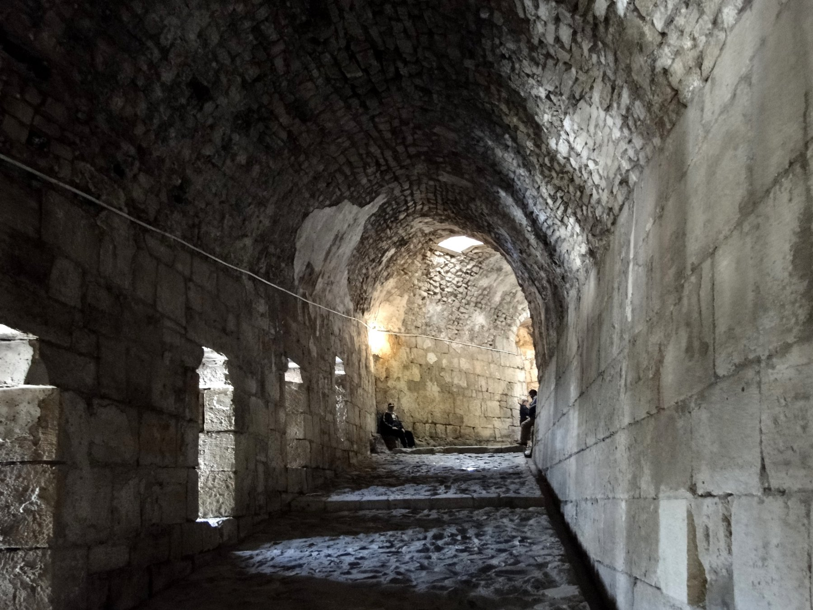
크라크 데 슈발리에(Krak des Chevaliers) · 시리아. 구호기사단이 지킨 이 난공불락의 요새는 살라딘조차 끝내 함락하지 못했다. [Wikimedia · CC BY-SA]
그러나 이 처절한 전쟁 속에서 두 사람은 기이한 상호 존경을 키웠다. 둘은 끝내 직접 대면하지 않았으나, 동생 알아딜을 비롯한 사절을 통해 끊임없이 서신과 선물을 주고받았다. 가장 유명한 일화 두 가지가 전한다. 하나, 아르수프에서였는지 다른 전투에서였는지, 리처드가 전투 중 말을 잃자 살라딘이 알아딜을 통해 두 마리의 명마를 보냈다는 것이다. 적장이 보병 신세로 싸우는 것은 기사도에 어긋난다는 이유였다. 둘, 리처드가 열병으로 앓아눕자 살라딘이 자신의 주치의를 보내고, 더운 사막에서 귀한 눈과 신선한 과일(배·복숭아)을 보내 그를 위문했다는 것이다.
그의 적들조차 그를 칭송했으니, 그는 자비롭고 신의가 있으며 약속을 어기는 법이 없었다.
바하 알딘 이븐 샤다드 『진귀한 기록』, 살라딘 인물평
이 일화들은 십자군 측 기록과 무슬림 측 기록 양쪽에 흩어져 전하므로 세부는 윤색되었을 수 있다. 그러나 두 적장이 서로를 단순한 야만의 적이 아니라 명예로운 호적수로 인정했다는 큰 흐름은 양측 사료가 공유한다. 살라딘이 리처드를 두고 "그가 무모하지만 않다면 이 시대 가장 위대한 군주가 되었을 것"이라 평했다는 이야기도 전한다.
두 사람의 대결은 단순한 무력 충돌이 아니라 두 가지 전쟁 철학의 충돌이기도 했다. 리처드는 한 번의 결정적 회전(會戰)으로 적을 분쇄하려는 서구 기사의 전형이었다. 그는 정면 돌격의 타이밍에 천재적이었고, 아르수프에서 그것을 증명했다. 반면 살라딘은 결전을 피하고 적을 소모시키는 동방의 전쟁술에 능했다. 그는 야전에서 리처드를 이기기 어렵다는 것을 인정한 뒤, 우물을 메우고 성을 허무는 청야 전술로 적의 진격 자체를 무의미하게 만들었다. 리처드가 예루살렘 코앞에서 두 번이나 발길을 돌린 것은, 바로 이 '점령해도 지킬 수 없다'는 살라딘의 전략이 만들어 낸 결과였다. 빛나는 전술가가 끈질긴 전략가에게 끝내 결정타를 먹이지 못한 것이다.
아크레 공성을 둘러싼 한 가지 어두운 사건도 기록해야 한다. 1191년 아크레가 함락된 뒤, 리처드는 무슬림 포로 약 이천칠백 명을 몸값 협상이 지연되자 성 밖에서 집단 처형했다. 살라딘이 보복으로 십자군 포로를 처형하기도 했으나, 그 규모와 잔혹성에서 아크레의 학살은 두고두고 리처드의 명예에 그늘을 드리웠다. 두 적수의 상호 존경이라는 낭만적 서사 이면에, 전쟁의 잔혹한 현실 또한 분명히 존재했음을 이 사건은 일깨운다. 기사도의 시대에도 학살은 일어났고, 그 점에서 살라딘의 일관된 절제는 더욱 두드러진다.
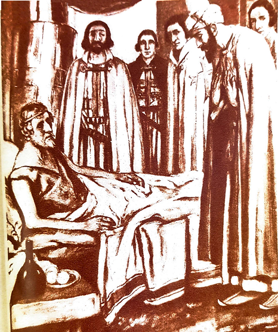
살라딘이 병든 리처드 1세를 위문하다 · 19세기 영국 삽화. 실제로 두 사람은 대면하지 않았으나, 적장에게 의사와 과일을 보낸 일화가 이렇게 시각화되었다. [Wikimedia · Public Domain]
결국 두 사람 누구도 결정적 승리를 거두지 못했다. 리처드는 예루살렘 가까이 두 번 진군했으나, 설령 도시를 빼앗더라도 본국으로 돌아가면 지켜낼 수 없음을 알고 끝내 발길을 돌렸다. 본국에서는 동생 존이 왕권을 노리고 있었다. 1192년 9월, 두 사람은 마침내 라믈라 휴전(Treaty of Ramla)에 합의했다. 십자군은 야파에서 티레에 이르는 해안 도시들을 보유하고, 예루살렘은 무슬림의 손에 남되, 기독교 순례자들은 무장하지 않고 자유롭게 성도를 방문할 수 있게 한다는 내용이었다. 어느 쪽도 완전히 이기지 못한, 그러나 양쪽 모두 명예를 지킨 정직한 타협이었다.
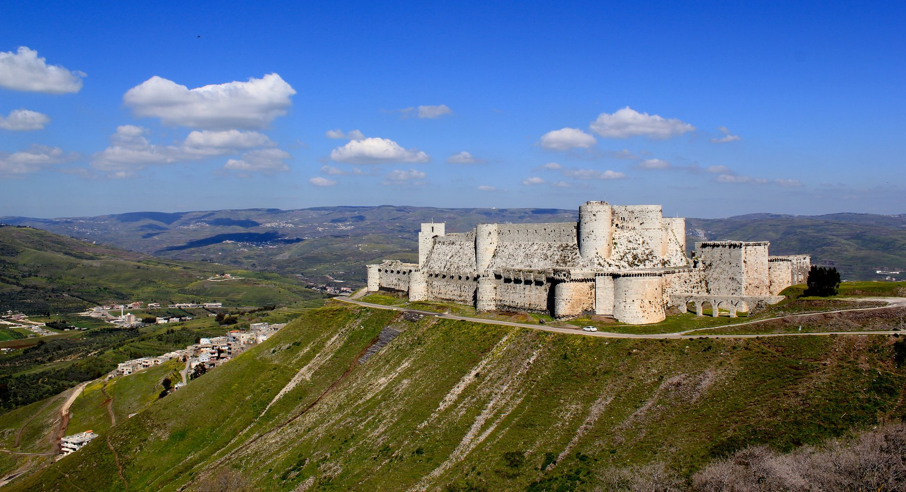
크라크 데 슈발리에 전경 · 시리아 호메스 협곡을 굽어보는 십자군 요새. 두 세기 동안 동방에 남은 십자군의 건축적 유산이다. [Wikimedia · CC BY-SA]
리처드와 살라딘의 관계가 후세에 그토록 회자된 데에는, 두 사람이 끝내 직접 만나지 않았다는 사실도 한몫했다. 만나지 않았기에 그 관계는 신화가 될 여지를 충분히 남겼다. 서신과 사절, 선물과 의사 — 모든 교류가 중개자를 거쳤고, 그 빈자리를 후세의 상상력이 채웠다. 만약 두 사람이 협상 천막에서 얼굴을 맞대고 흥정했다면, 그 인간적 마찰과 실망이 오히려 신화를 깨뜨렸을지 모른다. 거리가 존경을 키운 역설이다. 이렇게 '만나지 않은 두 적수'라는 구도 자체가, 적대와 존경이 공존하는 가장 이상적인 서사의 틀을 제공했다.
라믈라 휴전은 그 자체로 살라딘 외교의 결정판이었다. 군사적으로 그는 더 이상 십자군을 바다로 밀어낼 힘이 남아 있지 않았고, 리처드 역시 예루살렘을 차지할 수 없었다. 두 사람 모두 자신의 한계를 냉정하게 인식했고, 그 인식 위에서 어느 쪽도 굴욕을 느끼지 않을 타협안을 만들어 냈다. 예루살렘은 무슬림이, 해안은 십자군이, 그리고 순례의 자유는 모두가 — 이 세 가지 원칙은 양측의 핵심 이익을 절묘하게 갈라 담았다. 완전한 승리에 대한 집착을 버리고 지속 가능한 균형을 택한 이 결정은, 끝없는 소모전을 멈추게 한 현명한 마침표였다. 이기지 못할 전쟁을 명예롭게 끝내는 법을 아는 것 또한 위대한 지도자의 자질임을, 이 휴전은 보여 준다.
리처드는 휴전 직후 본국으로 돌아갔으나, 그를 기다린 것은 영광이 아니라 시련이었다. 귀국길에 오스트리아 공작에게 사로잡혀 신성 로마 황제에게 넘겨졌고, 잉글랜드는 왕을 되찾기 위해 막대한 몸값을 짜내야 했다. 한편 살라딘은 휴전으로 비로소 십수 년의 전쟁에서 손을 떼고 다마스쿠스로 돌아갈 수 있었다. 두 적수의 운명은 휴전을 기점으로 갈렸다. 한 사람은 쇠사슬에 묶여 몸값을 흥정당했고, 다른 한 사람은 고향에서 마지막 안식을 준비했다. 라믈라에서 맺은 그 약속이, 두 영웅 시대의 사실상 마지막 장이었던 셈이다.
곁가지 1 — 두 마리의 말
리처드에게 말을 보낸 일화는 후대 유럽 기사도 문학에서 가장 즐겨 인용된 장면이 되었다. 일부 판본은 그 무대를 야파 전투(1192)로, 다른 판본은 아르수프로 전한다. 무대와 세부는 엇갈리지만, '적장이 도보로 싸우는 것을 차마 두고 볼 수 없어 명마를 보냈다'는 핵심은 한결같다. 이 행위는 단순한 호의가 아니라, 전쟁에도 지켜야 할 품격이 있다는 두 군주 사이의 무언의 합의였다. 적을 죽이되 적을 모욕하지는 않는다는 — 오늘날의 표현으로 하면 일종의 '교전 규칙'의 원형이었던 셈이다.
[Source] 십자군 측 『순례자 여정기(Itinerarium Peregrinorum)』; 무슬림 측 바하 알딘 기록의 교차.
곁가지 2 — 혼인으로 끝낼 뻔한 전쟁
협상 과정에서 리처드는 놀라운 제안을 내놓았다고 전한다. 자신의 누이 조앤(Joan)을 살라딘의 동생 알아딜과 혼인시키고, 그 부부에게 예루살렘을 공동 통치하게 하자는 것이었다. 종교의 벽을 결혼으로 허물어 성도를 나누려는 발상이었다. 그러나 양측 종교계의 반발과 누이 조앤 본인의 거부로 무산되었다. 진심이었는지 협상용 카드였는지는 논란이 있으나, 이 일화는 두 진영이 단순한 증오를 넘어 현실적 타협을 모색했음을 보여 준다.
[Source] 바하 알딘 『진귀한 기록』; 십자군 협상 기록; S. Runciman, *A History of the Crusades* III권.
제3차 십자군 1189–1192
3대 군주바르바로사·필리프 2세·리처드 1세
바르바로사1190 살레프강에서 익사
핵심 전투아크레 공성(1191)·아르수프(1191)
리처드의 한계예루살렘 코앞에서 회군
종결라믈라 휴전 (1192.9)
결과해안은 십자군, 성도는 무슬림
잉글랜드
리처드는 귀국길에 오스트리아에서 사로잡혀 막대한 몸값을 치르고서야 풀려났다. 그가 자리를 비운 사이 동생 존이 왕권을 흔들었으니, 십자군의 영광 뒤에는 본국의 정치 위기가 그림자처럼 따라붙었다.
중앙아시아
호라즘 제국이 셀주크의 잔재를 흡수하며 동방의 새 강자로 떠오르던 시기. 한 세대 뒤 이 호라즘이 칭기즈 칸의 몽골과 충돌해 멸망하게 된다.
VIII
AD 1193년 3월 4일 · 다마스쿠스
다마스쿠스의 마지막 일주일
강의 듣기
반평생 나라의 부를 주물렀던 술탄이 죽었을 때, 그의 금고에는 장례 비용조차 모자랐다.
리처드와의 휴전 뒤 살라딘은 다마스쿠스로 돌아왔다. 십수 년의 끊임없는 원정으로 그의 몸은 이미 지쳐 있었다. 1193년 2월 말, 그는 한 차례 열병에 걸렸다. 처음에는 가벼운 듯했으나 병세는 빠르게 악화되었다. 측근들이 둘러선 가운데 그는 며칠을 앓다가, 3월 4일 새벽에 다마스쿠스에서 숨을 거두었다. 향년 약 쉰여섯. 임종을 지킨 비서 바하 알딘은 그 마지막 날들을 곁에서 기록으로 남겼다. 도시 전체가 깊은 애도에 잠겼고, 학자 한 사람이 그의 머리맡에서 꾸란의 한 구절 — "그분 외에 신은 없으며, 나는 그분께 의지하노라" — 을 읊자 살라딘의 얼굴에 평온한 미소가 번졌다고 전한다.
그의 죽음 뒤 드러난 한 가지 사실이 그의 평생을 압축한다. 이집트와 시리아의 부를 반평생 주물렀던 이 술탄이 개인적으로 남긴 재산은 금화 한 닢과 은화 마흔일곱 닢이 전부였다. 집도, 정원도, 사유지도 없었다. 그가 거두어들인 모든 것을 군대의 봉급, 자선, 모스크와 병원과 학교의 건립에 쏟아부었기 때문이다. 그의 장례를 치를 비용조차 모자라 측근들이 돈을 빌려 와야 했다고 전한다. 한 시대의 가장 강력한 군주가 무일푼으로 세상을 떠난 것이다.
그는 막대한 부를 손에 쥐었으나, 그 부는 늘 그의 손가락 사이로 흘러나가 가난한 자에게로 갔다. 그가 남긴 것은 금화 한 닢과 은화 마흔일곱 닢뿐이었다.
바하 알딘 이븐 샤다드 『진귀한 기록』, 살라딘의 죽음
그의 무덤은 다마스쿠스의 우마이야 모스크 북쪽에 마련되었다. 처음에는 소박한 목관에 안치되었다. 이 무덤은 그 자체로 또 한 번 후세 정치의 무대가 된다. 1898년, 독일 황제 빌헬름 2세가 오스만 제국을 순방하던 길에 이 무덤을 찾았다. 그는 무슬림 세계의 환심을 사기 위해, 살라딘을 "역사상 가장 기사도적인 군주"로 추켜세우며 무덤 위에 청동 월계관과 새 대리석 석관을 헌정했다. 그러나 그로부터 이십 년 뒤 제1차 세계대전에서 영국군이 다마스쿠스에 입성했을 때, 영국 장교 T. E. 로런스(아라비아의 로런스)가 그 독일 황제의 청동 화환을 떼어 전리품으로 가져갔다고 전한다. 한 정복자의 무덤조차 근대 제국주의 외교의 소도구가 된 셈이다.
살라딘이 세운 아이유브 왕조는 그의 죽음과 함께 시험에 들었다. 그는 제국을 한 사람에게 물려주지 않고, 여러 아들과 동생에게 이집트·다마스쿠스·알레포 등으로 나누어 맡겼다. 이 분권적 상속은 곧 내분을 불렀고, 동생 알아딜이 다시 권력을 통합했으나 왕조의 응집력은 예전 같지 않았다. 결국 약 칠십 년 뒤인 1250년대, 아이유브 왕조는 자신들이 거느렸던 노예 군인 집단 맘루크에게 권력을 넘기게 된다. 그러나 살라딘이 이룬 가장 큰 유산 — 이집트와 시리아를 하나로 묶은 정치적 통합 — 은 그 이름이 바뀐 뒤에도 근동 질서의 기준으로 살아남았다.
그가 자신의 비서 바하 알딘에게 남긴 인상은 이후 모든 살라딘상(像)의 원천이 되었다. 바하 알딘은 술탄의 죽음을 기록하며, 그가 평생 정해진 다섯 번의 예배를 거른 적이 거의 없었고, 병중에도 꾸란 낭송을 들으며 위안을 얻었으며, 거친 말이나 잔인한 처사를 좀처럼 보이지 않았다고 적었다. 그는 또 살라딘이 어린아이의 죽음을 슬퍼하는 어머니의 청을 듣고 적진에서 잃어버린 아이를 찾아 돌려보냈다는 일화도 전한다. 충직한 비서의 기록인 만큼 미화의 여지를 감안해야 하지만, 적대적이던 사가들조차 그의 청빈과 신의만큼은 부정하지 않았다는 점에서, 이 초상에는 단순한 윤색을 넘는 진실의 핵이 담겨 있다.
살라딘의 죽음을 전해 들은 적국 유럽의 반응 또한 의미심장하다. 그를 가장 두려워했던 십자군 세계조차 그의 부고에 적개심보다 일종의 경의를 표했다. 그가 떠난 뒤 한 세대도 지나지 않아 유럽의 음유시인과 연대기 작가들은 그를 '가장 고결한 사라센'으로 노래하기 시작했고, 그 전설은 시간이 갈수록 커졌다. 적이 죽었을 때 안도하는 대신 애도하는 — 이 드문 현상이야말로 한 인간이 도달할 수 있는 명예의 가장 높은 봉우리일 것이다. 살라딘은 살아서 예루살렘을 얻었고, 죽어서 적의 존경을 얻었다.
그의 분권적 상속이 남긴 결과도 짚어 둘 만하다. 그는 제국을 한 사람에게 몰아주는 대신 형제와 아들들에게 이집트·다마스쿠스·알레포로 나누어 맡겼다. 이는 냉혹한 권력 집중의 논리와는 거리가 멀었고, 결과적으로 아이유브 제국의 응집력을 약화시켰다. 한 인간으로서의 미덕 — 혈육에 대한 신뢰와 너그러움 — 이 통치자로서는 약점이 된 역설이다. 위대한 정복자가 반드시 위대한 제국 설계자는 아니었다는 이 한계는, 오히려 그의 인간적 면모를 더 또렷이 드러낸다. 그는 끝까지 차가운 계산보다 따뜻한 신의를 택한 사람이었고, 그 선택이 제국에는 손해였을지언정 그의 이름에는 영광이 되었다.
그의 무덤을 둘러싼 후일담은 한 영웅의 사후가 어떻게 정치의 무대가 되는가를 잘 보여 준다. 다마스쿠스 우마이야 모스크 곁의 그의 영묘에는 두 개의 관이 나란히 놓여 있다. 하나는 그가 처음 안치된 소박한 목관이고, 다른 하나는 1898년 독일 황제 빌헬름 2세가 헌정한 화려한 대리석 석관이다. 정작 살라딘의 유해는 여전히 소박한 목관에 머물러 있다고 전한다. 평생을 청빈으로 살다 간 술탄에게는 화려한 대리석보다 그 낡은 나무관이 더 어울린다는 듯이. 두 개의 관은 그를 둘러싼 두 겹의 기억 — 검소했던 실제의 인간과, 후세가 덧입힌 영광의 상징 — 을 그대로 형상화하고 있다.
살라딘의 마지막 나날을 곁에서 지킨 바하 알딘의 기록은, 권력의 정점에 섰던 한 인간이 어떻게 죽음을 맞았는가를 담담하게 전한다. 그는 화려한 궁전이 아니라 다마스쿠스의 거처에서, 측근들과 학자들에게 둘러싸여 조용히 숨을 거두었다. 임종의 자리에서 그는 새로운 정복을 꿈꾸지도, 권력의 미래를 놓고 다투지도 않았다. 다만 신앙 속에서 평온히 마지막 숨을 내려놓았을 뿐이다. 한 시대를 호령한 정복자의 죽음이 이토록 소박했다는 사실은, 그의 생애 전체를 관통한 절제와 경건이 마지막 순간까지 흐트러지지 않았음을 보여 준다. 그가 남긴 것은 거대한 영토가 아니라 하나의 본보기, 곧 가장 강한 자리에서도 가장 겸허할 수 있다는 본보기였다.
살라딘의 죽음은 또한 한 시대의 종막을 알리는 신호였다. 그가 떠난 뒤 십자군 시대는 여전히 한 세기를 더 이어졌으나, 하틴 이전의 십자군 국가가 누렸던 내륙의 영토는 끝내 회복되지 못했다. 예루살렘은 1229년 프리드리히 2세의 외교로 잠시 기독교에 돌아갔다가 다시 무슬림 손에 들어갔고, 1291년 아크레 함락으로 동방의 십자군 국가는 완전히 소멸한다. 살라딘이 하틴에서 꺾은 것은 한 왕국의 군대였지만, 그가 무너뜨린 것은 사실 십자군 운동 전체의 등뼈였던 셈이다.
곁가지 1 — 빌헬름 2세의 화환과 로런스
독일 황제 빌헬름 2세가 1898년 헌정한 청동 월계관에는 "한 황제가 다른 황제에게"라는 명문이 새겨져 있었다고 한다. 이는 독일이 오스만과 손잡고 영국·프랑스에 맞서려는 '범이슬람 외교'의 일환이었다. 제1차 세계대전 말 영국군의 다마스쿠스 점령(1918) 뒤 이 화환은 사라졌고, 오늘날 런던의 제국 전쟁 박물관에 그 일부가 소장되어 있다고 전한다. 화환을 떼어 간 인물로 T. E. 로런스가 지목되나, 정확한 경위는 사료에 따라 엇갈린다. 다만 한 무슬림 영웅의 무덤이 근대 강대국들의 상징 전쟁터가 되었다는 사실만은 분명하다.
[Source] 빌헬름 2세 시리아 순방 기록(1898); T. E. Lawrence 관련 사료; 제국 전쟁 박물관 소장 정보.
곁가지 2 — 무일푼 술탄의 회계
'금화 한 닢, 은화 마흔일곱 닢'이라는 구체적 숫자는 바하 알딘의 기록에서 나온 것으로, 살라딘의 청빈을 증명하는 가장 유명한 일화가 되었다. 물론 이는 어디까지나 그의 '사적 재산'에 관한 기록이며, 국가 재정과는 별개다. 또한 충직한 비서가 군주의 미덕을 부각하려 강조한 면도 감안해야 한다. 그럼에도 그가 사재를 거의 남기지 않았다는 점은 적대적이던 이븐 알아시르마저 부정하지 않았다는 점에서, 단순한 미화로만 보기는 어렵다.
[Source] 바하 알딘 『진귀한 기록』; 이븐 알아시르 『완전한 역사』의 부고 논평.
살라딘의 최후
사망1193.3.4 다마스쿠스, 열병
향년약 56세
사적 재산금화 1닢 + 은화 47닢
안식처우마이야 모스크 영묘
왕조 운명분권 상속 → 1250년대 맘루크에 승계
최대 유산이집트·시리아의 정치적 통합
유럽
살라딘이 죽은 1193년, 리처드는 아직 오스트리아·독일의 포로 신세였다. 두 적수 가운데 한 사람은 무일푼으로 눈을 감고, 다른 한 사람은 쇠사슬에 묶여 몸값을 흥정당하고 있었다. 영광의 시대가 함께 저물고 있었다.
인도
같은 시기 북인도에서는 고르 왕조의 무함마드 고리가 1192년 타라인 전투에서 승리해, 이슬람 세력이 인도 아대륙 깊숙이 진출하는 델리 술탄국의 토대를 놓고 있었다.
IX
Alia visione · 후세의 거울
다른 시선 — 단테, 스콧, 그리고 후세의 거울
강의 듣기
적이 적을 영웅으로 기억하는 일은 흔치 않다. 살라딘은 그 드문 일이 어떻게 일어나는가를 보여 주는 가장 큰 사례다.
한 인물의 진짜 크기는 그를 미워할 이유가 가장 많은 사람들이 그를 어떻게 기억하는가에서 드러난다. 살라딘은 십자군의 가장 큰 적이었다. 그는 예루살렘을 빼앗았고, 수많은 기사를 죽였다. 그런데도 그를 가장 높이 떠받든 것은 다름 아닌 그의 적, 곧 중세와 근대의 유럽이었다. 이 마지막 장은 살라딘이 사후 팔백 년 동안 어떻게 여러 거울에 비쳐 왔는가를 따라간다.
한 가지 먼저 분명히 해 둘 것이 있다. 우리가 떠올리는 '관대하고 기사도적인 살라딘'은 상당 부분 그의 적이었던 유럽이 빚어낸 이미지라는 점이다. 동시대 무슬림 사료들은 그를 무엇보다 지하드의 영웅이자 신앙의 수호자로 그렸지, '낭만적 기사'로 그리지 않았다. 자비와 관용이라는 측면을 특히 부각해 그를 신화화한 것은 오히려 중세 후기와 근대의 서구 문학이었다. 따라서 살라딘의 초상에는 두 겹이 있다. 사료가 전하는 경건하고 절제된 통치자라는 역사적 실상과, 후세가 덧입힌 '고결한 사라센'이라는 문학적 신화다. 이 둘을 구분하면서도, 두 초상이 모두 '적조차 그를 존경했다'는 한 가지 사실에서 출발한다는 점을 놓치지 않는 것이 중요하다.
살라딘 신화가 유럽에서 그토록 끈질기게 살아남은 데에는 한 가지 역설적인 이유가 있다. 적을 높일수록 그 적을 이긴 자신도 높아지기 때문이다. 십자군 세계는 예루살렘을 잃은 치욕을 견디기 위해, 자신들을 꺾은 상대를 '범상한 야만인'이 아니라 '고결한 군주'로 그려야 했다. 그래야 패배가 수치가 아니라 비극이 되고, 자신들의 분투가 헛되지 않은 것이 되기 때문이다. 이처럼 살라딘의 영웅화에는 패자 측의 자기 위안이라는 심리도 작용했다. 그러나 그런 동기가 있었다 해서 그 존경이 거짓이라 할 수는 없다. 윤색의 동기와 진실의 핵은 얼마든지 공존할 수 있으며, 살라딘의 경우 그 핵 — 자비와 신의 — 은 적의 사료에서도 거듭 확인되기 때문이다.
오늘날 살라딘은 영화와 소설, 정치 연설과 교과서 속에서 끊임없이 되살아난다. 어떤 작품은 그를 평화의 사도로, 어떤 연설은 그를 저항의 깃발로 호명한다. 그 다양한 해석의 스펙트럼 자체가, 한 인물이 얼마나 풍부한 의미를 품을 수 있는가를 증언한다. 그러나 그 모든 해석을 가로질러 변하지 않는 한 가지가 있다. 그가 가장 강했을 때 가장 자제했다는 사실, 그리고 가장 미워해야 할 적조차 그를 미워하지 못했다는 사실이다. 권력은 사람을 거칠게 만들기 쉽고, 승리는 사람을 오만하게 만들기 쉽다. 살라딘은 그 두 가지 유혹을 평생 견뎌 낸 드문 인물이었고, 바로 그 점에서 그의 이야기는 시대와 종교를 넘어 지금도 울림을 갖는다.
이 페이지에서 우리는 한 쿠르드 청년이 술탄이 되어 예루살렘을 되찾고, 적의 존경 속에 무일푼으로 눈을 감기까지의 긴 여정을 따라왔다. 그 여정의 마디마다 놓인 것은 거창한 정복의 기록이 아니라 작은 선택들이었다. 항복한 적에게 물 한 잔을 건넬 것인가, 가난한 포로의 몸값을 사재로 치를 것인가, 약속을 지킬 것인가 깰 것인가. 역사를 만드는 것은 결국 이런 순간의 선택이며, 살라딘은 그 순간마다 더 어렵고 더 너그러운 길을 택했다. 천 년 뒤의 우리가 그를 기억하는 까닭이 여기에 있다. 그의 칼이 아니라 그의 선택이, 한 사람을 영원한 이름으로 만들었다. 그리고 그 선택의 무게는, 우리 각자가 일상에서 마주하는 작은 결정들 속에서도 여전히 유효하다. 우리가 누군가를 이겼을 때 그를 어떻게 대하는가, 바로 그 한 번의 처신이 우리 자신이 어떤 사람인가를 결정하기 때문이다.
그렇다면 동시대 무슬림 세계는 그를 어떻게 보았을까. 충직한 비서 바하 알딘과 이마드 알딘은 그를 신앙의 영웅으로 칭송했으나, 모술 출신의 이븐 알아시르는 시종 비판적이었다. 이븐 알아시르는 살라딘이 장기 가문의 정통 후계를 가로챘다고 보았고, 그의 지하드 명분 뒤에 개인적 야심이 있었다고 의심했다. 이렇게 같은 시대의 무슬림 사가들 사이에서도 평가가 갈렸다는 사실은, 살라딘이 결코 만장일치의 성인이 아니었음을 일깨운다. 그는 정치가였고, 정치가에게는 늘 적과 비판자가 따른다. 역사적 살라딘의 진면목은 이 상반된 증언들 사이 어딘가에, 곧 경건한 이상과 현실의 야심이 교차하는 지점에 있을 것이다.
그럼에도 한 가지는 시대와 종교를 가로질러 일관된다. 그의 청빈과 신의에 대해서는 우호적인 사가도 적대적인 사가도 이견을 달지 않았다는 점이다. 적이 인정한 미덕만이 참된 미덕이라면, 살라딘의 자비와 정직은 가장 엄격한 검증을 통과한 셈이다. 그가 천 년의 시간을 건너 여전히 회자되는 까닭은, 그가 가장 강했던 순간에 가장 인간다웠기 때문이다. 권력의 정점에서 베푼 절제와 관용 — 그것이야말로 어떤 정복의 지도보다 오래 남는 유산이다.
마지막으로, 살라딘의 이야기는 오늘날 중동을 이해하는 데에도 묵직한 울림을 남긴다. 예루살렘은 여전히 세 종교가 얽힌 분쟁의 한복판에 있고, 그 도시를 둘러싼 기억의 전쟁은 천 년 전과 다르지 않다. 어떤 이들은 살라딘을 '서구에 맞선 저항'의 상징으로, 또 어떤 이들은 '관용과 공존'의 상징으로 호명한다. 흥미로운 것은, 그가 보여 준 행동의 핵심이 정작 정복이 아니라 정복 이후의 처신에 있었다는 점이다. 그는 빼앗는 법보다 빼앗은 뒤에 어떻게 대하는가로 역사에 새겨졌다. 증오의 악순환을 끊는 일이 얼마나 어렵고 또 얼마나 값진지를, 한 쿠르드 술탄의 팔백 년 전 선택이 지금도 조용히 일깨우고 있다.
역사를 돌아보면, 위대한 정복자는 많았으나 위대한 승자는 드물었다. 알렉산드로스도, 카이사르도, 칭기즈 칸도 광대한 땅을 손에 넣었다. 그러나 그들 가운데 패자의 마음까지 얻은 이는 많지 않았다. 살라딘이 특별한 까닭은 그가 단지 이겼기 때문이 아니라, 이긴 뒤에 어떻게 행동해야 하는가를 알았기 때문이다. 그는 칼로 도시를 빼앗았으되 자비로 사람을 얻었고, 전쟁으로 명예를 세웠으되 절제로 그것을 지켰다. 천 년이 지난 지금까지 그의 이름이 적과 아군 모두의 입에 오르내리는 것은, 바로 그 '승리 이후의 품격' 때문이다. 정복은 힘으로 이루어지지만, 그 정복을 영원한 것으로 만드는 것은 결국 인간다움이라는 사실 — 그것이 살라딘이 후세에 건넨 가장 깊은 가르침이다.
물론 우리는 그를 신화로만 기억해서는 안 된다. 그는 잔혹한 시대를 살았고, 때로는 포로를 처형했으며, 권력을 위해 동료 무슬림과도 싸웠다. 그의 자비에는 정치적 계산이 섞여 있었고, 그의 통합에는 야심이 깃들어 있었다. 그러나 바로 그렇기에 그의 절제와 관용은 더욱 값지다. 성인(聖人)이 베푸는 자비가 아니라, 권력과 욕망의 한복판에 선 한 정치가가 스스로를 다스려 베푼 자비였기 때문이다. 완벽한 영웅이 아니라 불완전한 인간이 도달한 높이였기에, 살라딘의 이야기는 오늘을 사는 우리에게도 흉내 낼 수 있는 본보기로 남는다. 가장 강한 순간에 가장 인간다웠던 한 사람, 그것이 역사가 기억하는 살라딘이다.
끝으로 한 가지를 덧붙이고 싶다. 살라딘의 생애는 출신이 운명을 결정하지 않는다는 것을 보여 주는 이야기이기도 하다. 변방 쿠르드 가문의 추방당한 아이가, 아랍과 튀르크가 지배하던 세계의 정점에 올랐다. 그는 혈통이나 가문의 후광이 아니라 능력과 신의로 그 자리에 닿았다. 그리고 정상에 오른 뒤에도 자신을 키운 절제와 경건을 버리지 않았다. 가장 낮은 곳에서 시작해 가장 높은 곳에 이르렀으되, 그 높이가 그를 바꾸지 못했다는 것 — 이것이야말로 한 인간이 보여 줄 수 있는 가장 어려운 일관성이다. 추방자의 수레에서 무일푼의 목관까지, 살라딘은 처음과 끝이 한결같았다. 그 한결같음이 그를 천 년의 영웅으로 만들었다.
곁가지 1 — 단테의 림보에 선 무슬림
이탈리아 시인 단테는 『신곡』 「지옥편」 제4곡에서 살라딘을 특별한 자리에 세웠다. 죄를 짓지는 않았으나 세례를 받지 못해 천국에 들지 못한 '고결한 이교도들'의 거처, 림보(Limbo)다. 그곳에는 호메로스, 소크라테스, 플라톤, 아리스토텔레스, 율리우스 카이사르가 있다. 단테는 그 위대한 영혼들 곁에 "홀로 떨어져 있는 살라딘(Saladino)"을 그려 넣었다. 가톨릭 신앙의 시인이 한 무슬림 정복자를 고대 현인들과 나란히 둔 것이다. 더욱 의미심장한 것은, 같은 단테가 예언자 무함마드는 지옥의 깊은 골짜기에 두었다는 점이다. 한 시인의 마음속에서 이슬람은 단죄받았으나, 살라딘 개인은 구원에 가장 가까운 이교도로 추앙되었다.
[Source] 단테 알리기에리, 『신곡』 「지옥편」 IV곡 129행.
곁가지 2 — 월터 스콧이 빚은 동방의 군주
1825년 스코틀랜드 작가 월터 스콧은 제3차 십자군을 배경으로 한 소설 『부적(The Talisman)』을 발표했다. 이 소설에서 살라딘은 변장한 의사 '알 하킴'으로 등장해 병든 리처드를 치료하고, 뒤늦게 정체를 드러낸다. 스콧은 살라딘을 지혜롭고 관대하며 기품 있는 동방 군주로, 오히려 거칠고 충동적인 리처드보다 더 매력적으로 그렸다. 이 소설은 19세기 유럽에 '고결한 사라센'이라는 살라딘 이미지를 굳혔고, 그 인상은 후대의 영화 — 리들리 스콧 감독의 「킹덤 오브 헤븐」(2005) — 에까지 이어진다. 다만 이런 낭만화는 실제 살라딘을 이상화한 면이 있어, 역사가들은 문학 속 살라딘과 사료 속 살라딘을 구분할 것을 권한다.
[Source] Walter Scott, *The Talisman*(1825); 십자군 수용사 연구 일반.
곁가지 3 — 아랍 민족주의가 되찾은 영웅
흥미롭게도 살라딘은 죽은 뒤 수백 년간 아랍 세계에서 그다지 크게 기념되지 않았다. 맘루크와 오스만 시대에는 다른 영웅들이 더 추앙받았다. 살라딘이 '이슬람의 위대한 해방자'로 다시 떠오른 것은 오히려 근대, 곧 유럽 제국주의에 맞서던 19세기 말과 20세기였다. 빌헬름 2세의 무덤 헌정이 역설적으로 그의 명성을 되살렸고, 이후 아랍 민족주의 지도자들이 그를 '서구에 맞선 통일의 상징'으로 호명했다. 이집트의 나세르는 자신을 살라딘에 빗댔고, 그의 얼굴은 여러 아랍 국가의 지폐와 우표, 국장(國章)에 새겨졌다. 한 영웅의 명성이 그의 사후가 아니라 칠백 년 뒤의 정치적 필요에 의해 재발견된 셈이다.
[Source] A.-M. Eddé, *Saladin*(2008), 수용사 장; 근대 아랍 민족주의 연구.
곁가지 4 — 쿠르드의 아들, 사담의 가면
살라딘은 쿠르드족이었으나 생전에 자신의 쿠르드 정체성을 내세우지 않았고, 아랍·이슬람 세계의 술탄으로 살았다. 그러나 현대 쿠르드 민족운동은 그를 가장 큰 민족 영웅으로 끌어안았다. 이라크 북부의 한 주(州)는 그의 이름을 따 '살라딘 주'라 불린다. 동시에 같은 티크리트 출신인 사담 후세인은 자신을 살라딘의 재현으로 선전하며 동상과 벽화를 곳곳에 세웠다. 그러나 사담은 정작 살라딘의 동족인 쿠르드족을 화학무기로 학살했다(1988년 할라브자). 자비로 적의 존경을 산 살라딘과, 잔혹으로 동족의 증오를 산 사담 — 한 도시가 낳은 두 인물의 대비는, 역사적 정통성을 빌려 오는 일이 얼마나 공허할 수 있는가를 보여 준다.
[Source] 현대 이라크·쿠르드 정치사; 1988 할라브자 사건 기록.
곁가지 5 — 오늘의 교훈 · 승리한 자의 품격
살라딘이 천 년의 시간을 건너 우리에게 남기는 가르침은, 결국 '이긴 자가 진 자를 어떻게 다루는가'에 있다. 첫째, 자비는 약함이 아니라 가장 멀리 가는 전략이다. 1099년의 학살은 두 세기에 걸친 증오를 낳았고, 1187년의 자비는 천 년에 걸친 존경을 낳았다. 적을 짓밟는 승리는 다음 전쟁의 씨앗이 되지만, 적을 존중하는 승리는 다음 평화의 토대가 된다. 둘째, 통합은 인내의 다른 이름이다. 그는 진짜 적과 싸우기 위해 먼저 같은 편을 묶는 데 십이 년을 견뎠다. 눈앞의 비난을 견디며 토대를 다지는 긴 호흡, 그것이 결정적 순간의 폭발력을 만들었다. 우리가 누군가에게 승리를 거두었을 때, 그를 어떻게 대하는가가 우리 자신의 평판을 천 년 동안 결정한다는 것 — 그것이 한 쿠르드 술탄이 남긴 마지막 메시지다.
[Source] 본 페이지 전체의 사료를 종합한 해석.
서구의 기억
중세 유럽은 자신들이 패배한 적장을 오히려 기사도의 화신으로 신화화했다. 살라딘은 보카치오의 『데카메론』에도 너그러운 군주로 등장하며, 서구 문학이 '명예로운 이방인'을 상상하는 원형이 되었다.
이슬람의 기억
현대 이슬람 세계에서 살라딘은 '예루살렘의 해방자'이자 분열을 넘어선 통합의 상징으로 거듭 호명된다. 그의 이름은 정치적 정당성을 구하는 이들이 가장 즐겨 빌려 오는 이름 가운데 하나로 남아 있다.